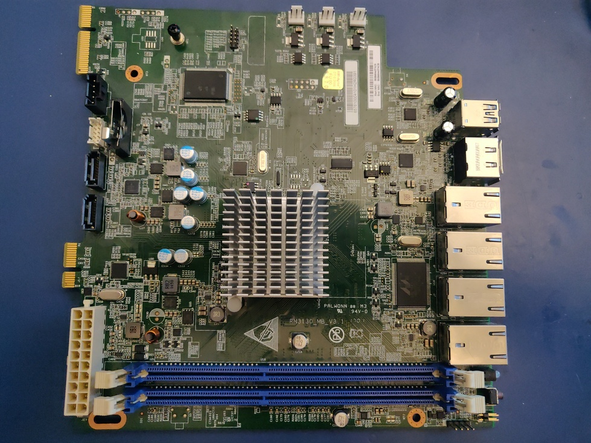
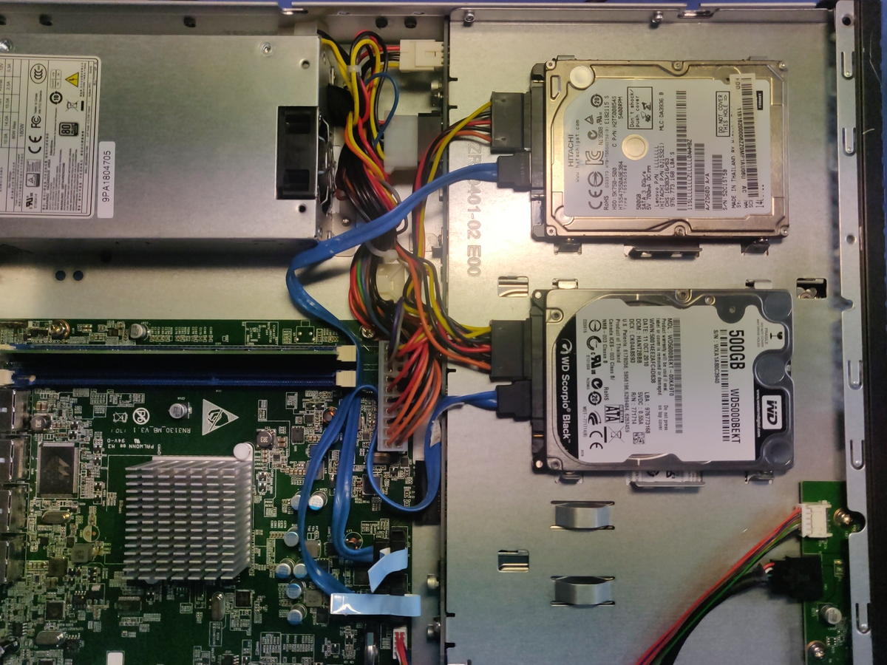
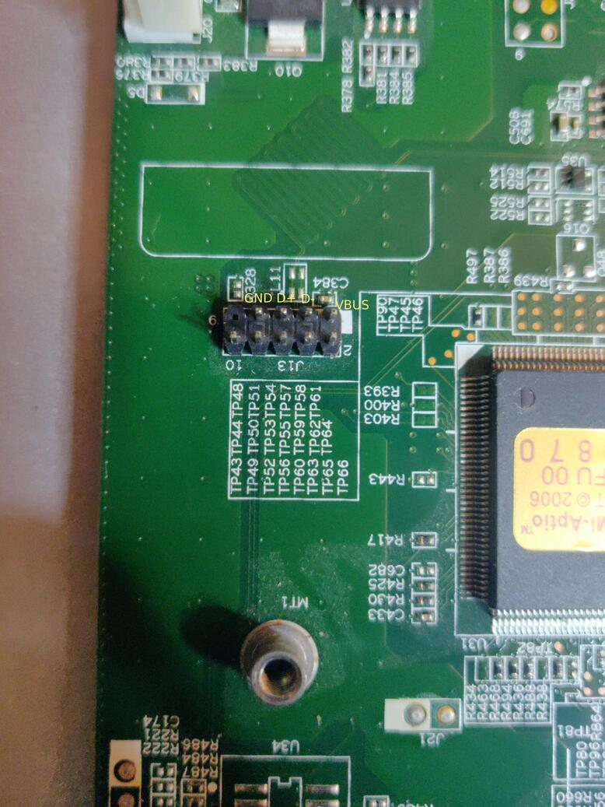
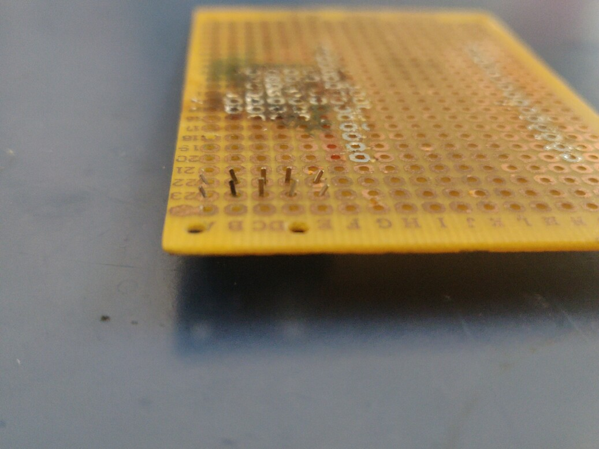
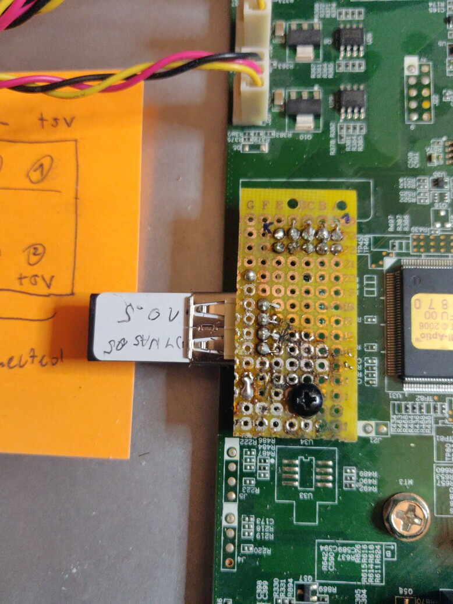

<?xml version="1.0" encoding="utf-8"?>
<!DOCTYPE html PUBLIC "-//W3C//DTD XHTML 1.0 Strict//EN"
"http://www.w3.org/TR/xhtml1/DTD/xhtml1-strict.dtd">
<html xmlns="http://www.w3.org/1999/xhtml" lang="en" xml:lang="en">
<head>
<!-- 2025-02-23 16:54 -->
<meta http-equiv="Content-Type" content="text/html;charset=utf-8" />
<meta name="viewport" content="width=device-width, initial-scale=1" />
<title>Netgear ReadyNAS RN3138</title>
<meta name="author" content="Maciej Grela" />
<meta name="generator" content="Org Mode" />
<style>
  #content { max-width: 60em; margin: auto; }
  .title  { text-align: center;
             margin-bottom: .2em; }
  .subtitle { text-align: center;
              font-size: medium;
              font-weight: bold;
              margin-top:0; }
  .todo   { font-family: monospace; color: red; }
  .done   { font-family: monospace; color: green; }
  .priority { font-family: monospace; color: orange; }
  .tag    { background-color: #eee; font-family: monospace;
            padding: 2px; font-size: 80%; font-weight: normal; }
  .timestamp { color: #bebebe; }
  .timestamp-kwd { color: #5f9ea0; }
  .org-right  { margin-left: auto; margin-right: 0px;  text-align: right; }
  .org-left   { margin-left: 0px;  margin-right: auto; text-align: left; }
  .org-center { margin-left: auto; margin-right: auto; text-align: center; }
  .underline { text-decoration: underline; }
  #postamble p, #preamble p { font-size: 90%; margin: .2em; }
  p.verse { margin-left: 3%; }
  pre {
    border: 1px solid #e6e6e6;
    border-radius: 3px;
    background-color: #f2f2f2;
    padding: 8pt;
    font-family: monospace;
    overflow: auto;
    margin: 1.2em;
  }
  pre.src {
    position: relative;
    overflow: auto;
  }
  pre.src:before {
    display: none;
    position: absolute;
    top: -8px;
    right: 12px;
    padding: 3px;
    color: #555;
    background-color: #f2f2f299;
  }
  pre.src:hover:before { display: inline; margin-top: 14px;}
  /* Languages per Org manual */
  pre.src-asymptote:before { content: 'Asymptote'; }
  pre.src-awk:before { content: 'Awk'; }
  pre.src-authinfo::before { content: 'Authinfo'; }
  pre.src-C:before { content: 'C'; }
  /* pre.src-C++ doesn't work in CSS */
  pre.src-clojure:before { content: 'Clojure'; }
  pre.src-css:before { content: 'CSS'; }
  pre.src-D:before { content: 'D'; }
  pre.src-ditaa:before { content: 'ditaa'; }
  pre.src-dot:before { content: 'Graphviz'; }
  pre.src-calc:before { content: 'Emacs Calc'; }
  pre.src-emacs-lisp:before { content: 'Emacs Lisp'; }
  pre.src-fortran:before { content: 'Fortran'; }
  pre.src-gnuplot:before { content: 'gnuplot'; }
  pre.src-haskell:before { content: 'Haskell'; }
  pre.src-hledger:before { content: 'hledger'; }
  pre.src-java:before { content: 'Java'; }
  pre.src-js:before { content: 'Javascript'; }
  pre.src-latex:before { content: 'LaTeX'; }
  pre.src-ledger:before { content: 'Ledger'; }
  pre.src-lisp:before { content: 'Lisp'; }
  pre.src-lilypond:before { content: 'Lilypond'; }
  pre.src-lua:before { content: 'Lua'; }
  pre.src-matlab:before { content: 'MATLAB'; }
  pre.src-mscgen:before { content: 'Mscgen'; }
  pre.src-ocaml:before { content: 'Objective Caml'; }
  pre.src-octave:before { content: 'Octave'; }
  pre.src-org:before { content: 'Org mode'; }
  pre.src-oz:before { content: 'OZ'; }
  pre.src-plantuml:before { content: 'Plantuml'; }
  pre.src-processing:before { content: 'Processing.js'; }
  pre.src-python:before { content: 'Python'; }
  pre.src-R:before { content: 'R'; }
  pre.src-ruby:before { content: 'Ruby'; }
  pre.src-sass:before { content: 'Sass'; }
  pre.src-scheme:before { content: 'Scheme'; }
  pre.src-screen:before { content: 'Gnu Screen'; }
  pre.src-sed:before { content: 'Sed'; }
  pre.src-sh:before { content: 'shell'; }
  pre.src-sql:before { content: 'SQL'; }
  pre.src-sqlite:before { content: 'SQLite'; }
  /* additional languages in org.el's org-babel-load-languages alist */
  pre.src-forth:before { content: 'Forth'; }
  pre.src-io:before { content: 'IO'; }
  pre.src-J:before { content: 'J'; }
  pre.src-makefile:before { content: 'Makefile'; }
  pre.src-maxima:before { content: 'Maxima'; }
  pre.src-perl:before { content: 'Perl'; }
  pre.src-picolisp:before { content: 'Pico Lisp'; }
  pre.src-scala:before { content: 'Scala'; }
  pre.src-shell:before { content: 'Shell Script'; }
  pre.src-ebnf2ps:before { content: 'ebfn2ps'; }
  /* additional language identifiers per "defun org-babel-execute"
       in ob-*.el */
  pre.src-cpp:before  { content: 'C++'; }
  pre.src-abc:before  { content: 'ABC'; }
  pre.src-coq:before  { content: 'Coq'; }
  pre.src-groovy:before  { content: 'Groovy'; }
  /* additional language identifiers from org-babel-shell-names in
     ob-shell.el: ob-shell is the only babel language using a lambda to put
     the execution function name together. */
  pre.src-bash:before  { content: 'bash'; }
  pre.src-csh:before  { content: 'csh'; }
  pre.src-ash:before  { content: 'ash'; }
  pre.src-dash:before  { content: 'dash'; }
  pre.src-ksh:before  { content: 'ksh'; }
  pre.src-mksh:before  { content: 'mksh'; }
  pre.src-posh:before  { content: 'posh'; }
  /* Additional Emacs modes also supported by the LaTeX listings package */
  pre.src-ada:before { content: 'Ada'; }
  pre.src-asm:before { content: 'Assembler'; }
  pre.src-caml:before { content: 'Caml'; }
  pre.src-delphi:before { content: 'Delphi'; }
  pre.src-html:before { content: 'HTML'; }
  pre.src-idl:before { content: 'IDL'; }
  pre.src-mercury:before { content: 'Mercury'; }
  pre.src-metapost:before { content: 'MetaPost'; }
  pre.src-modula-2:before { content: 'Modula-2'; }
  pre.src-pascal:before { content: 'Pascal'; }
  pre.src-ps:before { content: 'PostScript'; }
  pre.src-prolog:before { content: 'Prolog'; }
  pre.src-simula:before { content: 'Simula'; }
  pre.src-tcl:before { content: 'tcl'; }
  pre.src-tex:before { content: 'TeX'; }
  pre.src-plain-tex:before { content: 'Plain TeX'; }
  pre.src-verilog:before { content: 'Verilog'; }
  pre.src-vhdl:before { content: 'VHDL'; }
  pre.src-xml:before { content: 'XML'; }
  pre.src-nxml:before { content: 'XML'; }
  /* add a generic configuration mode; LaTeX export needs an additional
     (add-to-list 'org-latex-listings-langs '(conf " ")) in .emacs */
  pre.src-conf:before { content: 'Configuration File'; }

  table { border-collapse:collapse; }
  caption.t-above { caption-side: top; }
  caption.t-bottom { caption-side: bottom; }
  td, th { vertical-align:top;  }
  th.org-right  { text-align: center;  }
  th.org-left   { text-align: center;   }
  th.org-center { text-align: center; }
  td.org-right  { text-align: right;  }
  td.org-left   { text-align: left;   }
  td.org-center { text-align: center; }
  dt { font-weight: bold; }
  .footpara { display: inline; }
  .footdef  { margin-bottom: 1em; }
  .figure { padding: 1em; }
  .figure p { text-align: center; }
  .equation-container {
    display: table;
    text-align: center;
    width: 100%;
  }
  .equation {
    vertical-align: middle;
  }
  .equation-label {
    display: table-cell;
    text-align: right;
    vertical-align: middle;
  }
  .inlinetask {
    padding: 10px;
    border: 2px solid gray;
    margin: 10px;
    background: #ffffcc;
  }
  #org-div-home-and-up
   { text-align: right; font-size: 70%; white-space: nowrap; }
  textarea { overflow-x: auto; }
  .linenr { font-size: smaller }
  .code-highlighted { background-color: #ffff00; }
  .org-info-js_info-navigation { border-style: none; }
  #org-info-js_console-label
    { font-size: 10px; font-weight: bold; white-space: nowrap; }
  .org-info-js_search-highlight
    { background-color: #ffff00; color: #000000; font-weight: bold; }
  .org-svg { }
</style>
<style>#content { max-width: 90%; margin: auto; }</style>
</head>
<body>
<div id="content" class="content">
<h1 class="title">Netgear ReadyNAS RN3138</h1>
<div id="table-of-contents" role="doc-toc">
<h2>Table of Contents</h2>
<div id="text-table-of-contents" role="doc-toc">
<ul>
<li><a href="#orgae13cf7">1. Hardware</a>
<ul>
<li><a href="#orgc222a0a">1.1. Main board</a>
<ul>
<li><a href="#org62b49f5">1.1.1. Connectors on the mainboard</a></li>
</ul>
</li>
<li><a href="#org59f233f">1.2. Network traffic observed when NAS is booting</a></li>
</ul>
</li>
<li><a href="#orgefc77ad">2. Software update mechanism</a>
<ul>
<li><a href="#org4122d8c">2.1. Booting an alternative operating system</a></li>
</ul>
</li>
<li><a href="#orgf80fec9">3. Mods</a>
<ul>
<li><a href="#org891c1f6">3.1. Additional hard disks</a></li>
<li><a href="#orgce404e1">3.2. Internal USB storage connector</a></li>
<li><a href="#org15da28a">3.3. Voltage, temperature and fan speed monitoring</a></li>
<li><a href="#org2aa2bef">3.4. Chassis buttons and LEDs</a></li>
</ul>
</li>
</ul>
</div>
</div>

<div id="outline-container-orgae13cf7" class="outline-2">
<h2 id="orgae13cf7"><span class="section-number-2">1.</span> Hardware</h2>
<div class="outline-text-2" id="text-1">
<p>
The Netgear ReadyNAS 3138 is a 1U rack-mounted NAS server with 4 3.5'' SATA drive slots. I have recently purchased such a device in order to use it as a small home fileserver
and decided to play with it a small bit before placing it in production use on the network. The manufacturer part number on the sticker that I got was RN31843E which indicates,
that the NAS was originally sold with 4 x 3TB disks inside (<a href="https://www.cdw.com/product/NETGEAR-ReadyNAS-Rackmount-4x3TB-Enterprise-Drives-RN31843E/3921155">https://www.cdw.com/product/NETGEAR-ReadyNAS-Rackmount-4x3TB-Enterprise-Drives-RN31843E/3921155</a>). I got it empty
however so it's just a plain RN3138.
</p>

<p>
All of the currently available information about the device has been moved to <a href="https://wikidevi.wi-cat.ru/Netgear_ReadyNAS_3138">wikidevi</a>.
</p>
</div>

<div id="outline-container-orgc222a0a" class="outline-3">
<h3 id="orgc222a0a"><span class="section-number-3">1.1.</span> Main board</h3>
<div class="outline-text-3" id="text-1-1">

<div id="org409a0d9" class="figure">
<p><a href="netgear-rn3138/Netgear-RN3138-mainboard1.jpg"></a>
</p>
</div>
</div>

<div id="outline-container-org62b49f5" class="outline-4">
<h4 id="org62b49f5"><span class="section-number-4">1.1.1.</span> Connectors on the mainboard</h4>
<div class="outline-text-4" id="text-1-1-1">
<table border="2" cellspacing="0" cellpadding="6" rules="groups" frame="hsides">


<colgroup>
<col  class="org-left" />

<col  class="org-left" />

<col  class="org-left" />

<col  class="org-left" />

<col  class="org-left" />
</colgroup>
<thead>
<tr>
<th scope="col" class="org-left">Designator</th>
<th scope="col" class="org-left">Footprint</th>
<th scope="col" class="org-left">Pinout</th>
<th scope="col" class="org-left">Description</th>
<th scope="col" class="org-left">Notes</th>
</tr>
</thead>
<tbody>
<tr>
<td class="org-left">J1</td>
<td class="org-left">1x3 2.54mm Dupont</td>
<td class="org-left">Unknown</td>
<td class="org-left">Unknown (possibly CMOS reset jumper)</td>
<td class="org-left">Unpopulated</td>
</tr>

<tr>
<td class="org-left">J2</td>
<td class="org-left">1x4 2.54mm Dupont</td>
<td class="org-left">1-3.3V, 2-RXD, 3-TXD, 4-GND</td>
<td class="org-left">Serial console</td>
<td class="org-left">&#xa0;</td>
</tr>

<tr>
<td class="org-left">J3</td>
<td class="org-left">2x2 2mm Dupont</td>
<td class="org-left"><a href="https://wikidevi.wi-cat.ru/Netgear_ReadyNAS_3138">Documented on Wikidevi</a></td>
<td class="org-left">Serial console</td>
<td class="org-left">&#xa0;</td>
</tr>

<tr>
<td class="org-left">J4, J5</td>
<td class="org-left">1x4 2.54mm Dupont</td>
<td class="org-left">Unknown</td>
<td class="org-left">Unknown</td>
<td class="org-left">Unpopulated</td>
</tr>

<tr>
<td class="org-left">LED1</td>
<td class="org-left">LED</td>
<td class="org-left">Unknown</td>
<td class="org-left">UI LED (back)</td>
<td class="org-left">&#xa0;</td>
</tr>

<tr>
<td class="org-left">S4</td>
<td class="org-left">microswitch</td>
<td class="org-left">Wired to IT8732F pin 13 (GP35?)</td>
<td class="org-left">Unknown</td>
<td class="org-left">Unpopulated</td>
</tr>

<tr>
<td class="org-left">S5</td>
<td class="org-left">microswitch</td>
<td class="org-left">Wired to IT8732F pin 75 (GP43?)</td>
<td class="org-left">Unknown</td>
<td class="org-left">Unpopulated</td>
</tr>

<tr>
<td class="org-left">S6</td>
<td class="org-left">microswitch</td>
<td class="org-left">Unknown</td>
<td class="org-left">UI button (back)</td>
<td class="org-left">&#xa0;</td>
</tr>

<tr>
<td class="org-left">J13</td>
<td class="org-left">2x5 2mm Dupont</td>
<td class="org-left">documented below</td>
<td class="org-left">internal USB port</td>
<td class="org-left">&#xa0;</td>
</tr>

<tr>
<td class="org-left">J18,J19,J20</td>
<td class="org-left">JST-XH 3 pin</td>
<td class="org-left">3-wire PC fan</td>
<td class="org-left">Chassis fans</td>
<td class="org-left">&#xa0;</td>
</tr>

<tr>
<td class="org-left">J21</td>
<td class="org-left">1x2 2.54mm Dupont</td>
<td class="org-left">Unknown</td>
<td class="org-left">Unknown</td>
<td class="org-left">Unpopulated</td>
</tr>

<tr>
<td class="org-left">J22</td>
<td class="org-left">2x5 2.54mm Dupont</td>
<td class="org-left">documented below</td>
<td class="org-left">LPC connector</td>
<td class="org-left">Unpopulated</td>
</tr>

<tr>
<td class="org-left">CN1</td>
<td class="org-left">2x5 JST</td>
<td class="org-left">documented below</td>
<td class="org-left">Front panel</td>
<td class="org-left">&#xa0;</td>
</tr>

<tr>
<td class="org-left">J15</td>
<td class="org-left">1x5 JST</td>
<td class="org-left">Unknown</td>
<td class="org-left">Front USB connector</td>
<td class="org-left">&#xa0;</td>
</tr>
</tbody>
</table>
</div>

<ol class="org-ol">
<li><a id="org4002382"></a>LPC Connector<br />
<div class="outline-text-5" id="text-1-1-1-1">
<p>
The mainboard contains an unpopulated 2x5 Dupont connector wired to the CPU and to the IT8732F Super I/O chip. Based on some trace routing together with a pinout of the IT8732F chip
this looks to be an <a href="https://en.wikipedia.org/wiki/Low_Pin_Count">LPC</a> connector. The pinout is the following:
</p>

<table border="2" cellspacing="0" cellpadding="6" rules="groups" frame="hsides">


<colgroup>
<col  class="org-right" />

<col  class="org-right" />

<col  class="org-left" />

<col  class="org-left" />
</colgroup>
<thead>
<tr>
<th scope="col" class="org-right">J22 Pin</th>
<th scope="col" class="org-right">IT8732F Pin</th>
<th scope="col" class="org-left">Pin Function (based on a related IT8782F chip pinout)</th>
<th scope="col" class="org-left">Notes</th>
</tr>
</thead>
<tbody>
<tr>
<td class="org-right">1</td>
<td class="org-right">&#xa0;</td>
<td class="org-left">&#xa0;</td>
<td class="org-left">&#xa0;</td>
</tr>

<tr>
<td class="org-right">2</td>
<td class="org-right">42</td>
<td class="org-left">LAD1</td>
<td class="org-left">&#xa0;</td>
</tr>

<tr>
<td class="org-right">3</td>
<td class="org-right">49</td>
<td class="org-left">CLKIN</td>
<td class="org-left">LCLK</td>
</tr>

<tr>
<td class="org-right">4</td>
<td class="org-right">41</td>
<td class="org-left">LAD0</td>
<td class="org-left">&#xa0;</td>
</tr>

<tr>
<td class="org-right">5</td>
<td class="org-right">40</td>
<td class="org-left">LFRAME#</td>
<td class="org-left">&#xa0;</td>
</tr>

<tr>
<td class="org-right">6</td>
<td class="org-right">&#xa0;</td>
<td class="org-left">&#xa0;</td>
<td class="org-left">&#xa0;</td>
</tr>

<tr>
<td class="org-right">7</td>
<td class="org-right">44</td>
<td class="org-left">LAD3</td>
<td class="org-left">&#xa0;</td>
</tr>

<tr>
<td class="org-right">8</td>
<td class="org-right">GND</td>
<td class="org-left">&#xa0;</td>
<td class="org-left">&#xa0;</td>
</tr>

<tr>
<td class="org-right">9</td>
<td class="org-right">43</td>
<td class="org-left">LAD2</td>
<td class="org-left">&#xa0;</td>
</tr>

<tr>
<td class="org-right">10</td>
<td class="org-right">GND</td>
<td class="org-left">&#xa0;</td>
<td class="org-left">&#xa0;</td>
</tr>
</tbody>
</table>

<p>
One mandatory LPC pin missing is LRESET# but according to Wikipedia this can be connected to the PCIRST# so might not be wired directly to the Super I/O chip. Unfortunately, my 
logic analyzer is too slow to gather a trace of the signals on this connector (LCLK is 33.3 MHz).
</p>
</div>
</li>

<li><a id="orgba8f8ad"></a>Front panel connector<br />
<div class="outline-text-5" id="text-1-1-1-2">
<table border="2" cellspacing="0" cellpadding="6" rules="groups" frame="hsides">


<colgroup>
<col  class="org-right" />

<col  class="org-left" />

<col  class="org-left" />

<col  class="org-left" />
</colgroup>
<thead>
<tr>
<th scope="col" class="org-right">Pin number</th>
<th scope="col" class="org-left">Front board side</th>
<th scope="col" class="org-left">Mainboard side</th>
<th scope="col" class="org-left">Notes</th>
</tr>
</thead>
<tbody>
<tr>
<td class="org-right">1</td>
<td class="org-left">+3.3V</td>
<td class="org-left">&#xa0;</td>
<td class="org-left">&#xa0;</td>
</tr>

<tr>
<td class="org-right">2</td>
<td class="org-left">UI LED anode</td>
<td class="org-left">&#xa0;</td>
<td class="org-left">&#xa0;</td>
</tr>

<tr>
<td class="org-right">3</td>
<td class="org-left">PWR button</td>
<td class="org-left">&#xa0;</td>
<td class="org-left">short to GND when pressed</td>
</tr>

<tr>
<td class="org-right">4</td>
<td class="org-left">⚠ LED</td>
<td class="org-left">IT8732F pin 79 (GP40?)</td>
<td class="org-left">cathode, anode wired to +3.3V</td>
</tr>

<tr>
<td class="org-right">5</td>
<td class="org-left">Reset button</td>
<td class="org-left">IT8732F pin 14 (GP34?)</td>
<td class="org-left">short to GND when pressed</td>
</tr>

<tr>
<td class="org-right">6</td>
<td class="org-left">UI LED cathode</td>
<td class="org-left">&#xa0;</td>
<td class="org-left">&#xa0;</td>
</tr>

<tr>
<td class="org-right">7</td>
<td class="org-left">UI button</td>
<td class="org-left">Connected to S6 on the back</td>
<td class="org-left">short to GND when pressed, can be wired to IT8732F pin 57</td>
</tr>

<tr>
<td class="org-right">8</td>
<td class="org-left">🖧 LAN LED</td>
<td class="org-left">&#xa0;</td>
<td class="org-left">cathode, anode wired to +3.3V</td>
</tr>

<tr>
<td class="org-right">9</td>
<td class="org-left">GND</td>
<td class="org-left">&#xa0;</td>
<td class="org-left">&#xa0;</td>
</tr>

<tr>
<td class="org-right">10</td>
<td class="org-left">⏻ Power LED</td>
<td class="org-left">&#xa0;</td>
<td class="org-left">&#xa0;</td>
</tr>
</tbody>
</table>
</div>
</li>
</ol>
</div>
</div>

<div id="outline-container-org59f233f" class="outline-3">
<h3 id="org59f233f"><span class="section-number-3">1.2.</span> Network traffic observed when NAS is booting</h3>
<div class="outline-text-3" id="text-1-2">
<pre>
Aug 13 19:14:50 newton dnsmasq-dhcp[2894]: 4065195709 available DHCP range: 10.2.0.8 -- 10.2.0.14
Aug 13 19:14:50 newton dnsmasq-dhcp[2894]: 4065195709 client provides name: nas-43-7A-C8
Aug 13 19:14:50 newton dnsmasq-dhcp[2894]: 4065195709 DHCPDISCOVER(tbnet2) b0:b9:8a:43:7a:c8
Aug 13 19:14:50 newton dnsmasq-dhcp[2894]: 4065195709 tags: tbnet2
Aug 13 19:14:50 newton dnsmasq-dhcp[2894]: 4065195709 DHCPOFFER(tbnet2) 10.2.0.8 b0:b9:8a:43:7a:c8
Aug 13 19:14:50 newton dnsmasq-dhcp[2894]: 4065195709 requested options: 1:netmask, 3:router, 26:mtu, 252, 42:ntp-server,
Aug 13 19:14:50 newton dnsmasq-dhcp[2894]: 4065195709 requested options: 15:domain-name, 6:dns-server, 12:hostname
Aug 13 19:14:50 newton dnsmasq-dhcp[2894]: 4065195709 bootfile name: kernel
Aug 13 19:14:50 newton dnsmasq-dhcp[2894]: 4065195709 next server: 10.2.0.1
Aug 13 19:14:50 newton dnsmasq-dhcp[2894]: 4065195709 broadcast response
Aug 13 19:14:50 newton dnsmasq-dhcp[2894]: 4065195709 sent size:  1 option: 53 message-type  2
Aug 13 19:14:50 newton dnsmasq-dhcp[2894]: 4065195709 sent size:  4 option: 54 server-identifier  10.2.0.1
Aug 13 19:14:50 newton dnsmasq-dhcp[2894]: 4065195709 sent size:  4 option: 51 lease-time  1d
Aug 13 19:14:50 newton dnsmasq-dhcp[2894]: 4065195709 sent size:  4 option: 58 T1  12h
Aug 13 19:14:50 newton dnsmasq-dhcp[2894]: 4065195709 sent size:  4 option: 59 T2  21h
Aug 13 19:14:50 newton dnsmasq-dhcp[2894]: 4065195709 sent size:  4 option:  1 netmask  255.255.255.240
Aug 13 19:14:50 newton dnsmasq-dhcp[2894]: 4065195709 sent size:  4 option: 28 broadcast  10.2.0.15
Aug 13 19:14:50 newton dnsmasq-dhcp[2894]: 4065195709 sent size:  4 option:  3 router  10.2.0.1
Aug 13 19:14:50 newton dnsmasq-dhcp[2894]: 4065195709 sent size:  4 option:  6 dns-server  10.2.0.1
Aug 13 19:14:50 newton dnsmasq-dhcp[2894]: 4065195709 sent size:  6 option: 15 domain-name  tbnet2
Aug 13 19:14:50 newton dnsmasq-dhcp[2894]: 4065195709 available DHCP range: 10.2.0.8 -- 10.2.0.14
Aug 13 19:14:50 newton dnsmasq-dhcp[2894]: 4065195709 client provides name: nas-43-7A-C8
Aug 13 19:14:50 newton dnsmasq-dhcp[2894]: 4065195709 DHCPREQUEST(tbnet2) 10.2.0.8 b0:b9:8a:43:7a:c8
Aug 13 19:14:50 newton dnsmasq-dhcp[2894]: 4065195709 tags: tbnet2
Aug 13 19:14:50 newton dnsmasq-dhcp[2894]: 4065195709 DHCPACK(tbnet2) 10.2.0.8 b0:b9:8a:43:7a:c8 nas-43-7A-C8
Aug 13 19:14:50 newton dnsmasq-dhcp[2894]: 4065195709 requested options: 1:netmask, 3:router, 26:mtu, 252, 42:ntp-server,
Aug 13 19:14:50 newton dnsmasq-dhcp[2894]: 4065195709 requested options: 15:domain-name, 6:dns-server, 12:hostname
Aug 13 19:14:50 newton dnsmasq-dhcp[2894]: 4065195709 bootfile name: kernel
Aug 13 19:14:50 newton dnsmasq-dhcp[2894]: 4065195709 next server: 10.2.0.1
Aug 13 19:14:50 newton dnsmasq-dhcp[2894]: 4065195709 broadcast response
Aug 13 19:14:50 newton dnsmasq-dhcp[2894]: 4065195709 sent size:  1 option: 53 message-type  5
Aug 13 19:14:50 newton dnsmasq-dhcp[2894]: 4065195709 sent size:  4 option: 54 server-identifier  10.2.0.1
Aug 13 19:14:50 newton dnsmasq-dhcp[2894]: 4065195709 sent size:  4 option: 51 lease-time  1d
Aug 13 19:14:50 newton dnsmasq-dhcp[2894]: 4065195709 sent size:  4 option: 58 T1  12h
Aug 13 19:14:50 newton dnsmasq-dhcp[2894]: 4065195709 sent size:  4 option: 59 T2  21h
Aug 13 19:14:50 newton dnsmasq-dhcp[2894]: 4065195709 sent size:  4 option:  1 netmask  255.255.255.240
Aug 13 19:14:50 newton dnsmasq-dhcp[2894]: 4065195709 sent size:  4 option: 28 broadcast  10.2.0.15
Aug 13 19:14:50 newton dnsmasq-dhcp[2894]: 4065195709 sent size:  4 option:  3 router  10.2.0.1
Aug 13 19:14:50 newton dnsmasq-dhcp[2894]: 4065195709 sent size:  4 option:  6 dns-server  10.2.0.1
Aug 13 19:14:50 newton dnsmasq-dhcp[2894]: 4065195709 sent size:  6 option: 15 domain-name  tbnet2
Aug 13 19:14:50 newton dnsmasq-dhcp[2894]: 4065195709 sent size: 12 option: 12 hostname  nas-43-7A-C8
Aug 13 19:14:50 newton dnsmasq[2894]: query[A] radar.netgear.com from 10.2.0.8
Aug 13 19:14:50 newton dnsmasq[2894]: forwarded radar.netgear.com to 127.0.0.53
Aug 13 19:14:50 newton dnsmasq[2894]: query[AAAA] radar.netgear.com from 10.2.0.8
Aug 13 19:14:50 newton dnsmasq[2894]: forwarded radar.netgear.com to 127.0.0.53
Aug 13 19:14:50 newton dnsmasq[2894]: query[SRV] _http._tcp.security.debian.org from 10.2.0.8
Aug 13 19:14:50 newton dnsmasq[2894]: forwarded _http._tcp.security.debian.org to 127.0.0.53
Aug 13 19:14:50 newton dnsmasq[2894]: query[SRV] _http._tcp.mirrors.kernel.org from 10.2.0.8
Aug 13 19:14:50 newton dnsmasq[2894]: forwarded _http._tcp.mirrors.kernel.org to 127.0.0.53
Aug 13 19:14:50 newton dnsmasq[2894]: query[SRV] _http._tcp.apt.readynas.com from 10.2.0.8
Aug 13 19:14:50 newton dnsmasq[2894]: forwarded _http._tcp.apt.readynas.com to 127.0.0.53
Aug 13 19:14:50 newton dnsmasq[2894]: query[A] debian.map.fastlydns.net from 10.2.0.8
Aug 13 19:14:50 newton dnsmasq[2894]: forwarded debian.map.fastlydns.net to 127.0.0.53
Aug 13 19:14:50 newton dnsmasq[2894]: query[AAAA] debian.map.fastlydns.net from 10.2.0.8
Aug 13 19:14:50 newton dnsmasq[2894]: forwarded debian.map.fastlydns.net to 127.0.0.53
Aug 13 19:14:51 newton dnsmasq[2894]: reply radar.netgear.com is <CNAME>
Aug 13 19:14:51 newton dnsmasq[2894]: reply d1sspvq8qkc0rg.cloudfront.net is 2600:9000:20ae:f400:1b:daf2:b700:93a1
Aug 13 19:14:51 newton dnsmasq[2894]: reply d1sspvq8qkc0rg.cloudfront.net is 2600:9000:20ae:d400:1b:daf2:b700:93a1
Aug 13 19:14:51 newton dnsmasq[2894]: reply d1sspvq8qkc0rg.cloudfront.net is 2600:9000:20ae:9a00:1b:daf2:b700:93a1
Aug 13 19:14:51 newton dnsmasq[2894]: reply d1sspvq8qkc0rg.cloudfront.net is 2600:9000:20ae:6800:1b:daf2:b700:93a1
Aug 13 19:14:51 newton dnsmasq[2894]: reply d1sspvq8qkc0rg.cloudfront.net is 2600:9000:20ae:2400:1b:daf2:b700:93a1
Aug 13 19:14:51 newton dnsmasq[2894]: reply d1sspvq8qkc0rg.cloudfront.net is 2600:9000:20ae:1e00:1b:daf2:b700:93a1
Aug 13 19:14:51 newton dnsmasq[2894]: reply d1sspvq8qkc0rg.cloudfront.net is 2600:9000:20ae:1a00:1b:daf2:b700:93a1
Aug 13 19:14:51 newton dnsmasq[2894]: reply d1sspvq8qkc0rg.cloudfront.net is 2600:9000:20ae:200:1b:daf2:b700:93a1
Aug 13 19:14:51 newton dnsmasq[2894]: query[A] mirrors.kernel.org from 10.2.0.8
Aug 13 19:14:51 newton dnsmasq[2894]: forwarded mirrors.kernel.org to 127.0.0.53
Aug 13 19:14:51 newton dnsmasq[2894]: query[AAAA] mirrors.kernel.org from 10.2.0.8
Aug 13 19:14:51 newton dnsmasq[2894]: forwarded mirrors.kernel.org to 127.0.0.53
Aug 13 19:14:51 newton dnsmasq[2894]: reply debian.map.fastlydns.net is 151.101.14.132
Aug 13 19:14:51 newton dnsmasq[2894]: reply debian.map.fastlydns.net is 2a04:4e42:3::644
Aug 13 19:14:51 newton dnsmasq[2894]: reply radar.netgear.com is <CNAME>
Aug 13 19:14:51 newton dnsmasq[2894]: reply d1sspvq8qkc0rg.cloudfront.net is 54.192.230.123
Aug 13 19:14:51 newton dnsmasq[2894]: reply d1sspvq8qkc0rg.cloudfront.net is 54.192.230.109
Aug 13 19:14:51 newton dnsmasq[2894]: reply d1sspvq8qkc0rg.cloudfront.net is 54.192.230.39
Aug 13 19:14:51 newton dnsmasq[2894]: reply d1sspvq8qkc0rg.cloudfront.net is 54.192.230.17
Aug 13 19:14:51 newton dnsmasq[2894]: query[A] apt.readynas.com from 10.2.0.8
Aug 13 19:14:51 newton dnsmasq[2894]: forwarded apt.readynas.com to 127.0.0.53
Aug 13 19:14:51 newton dnsmasq[2894]: query[AAAA] apt.readynas.com from 10.2.0.8
Aug 13 19:14:51 newton dnsmasq[2894]: forwarded apt.readynas.com to 127.0.0.53
Aug 13 19:14:51 newton dnsmasq[2894]: reply mirrors.kernel.org is <CNAME>
Aug 13 19:14:51 newton dnsmasq[2894]: reply mirrors.sfo.kernel.org is 149.20.37.36
Aug 13 19:14:51 newton dnsmasq[2894]: reply mirrors.kernel.org is <CNAME>
Aug 13 19:14:51 newton dnsmasq[2894]: reply mirrors.sfo.kernel.org is 2001:4f8:4:6f:0:1994:3:14
Aug 13 19:14:51 newton dnsmasq[2894]: reply apt.readynas.com is <CNAME>
Aug 13 19:14:51 newton dnsmasq[2894]: reply d1oxtxiu4ecexv.cloudfront.net is 54.192.230.127
Aug 13 19:14:51 newton dnsmasq[2894]: reply d1oxtxiu4ecexv.cloudfront.net is 54.192.230.124
Aug 13 19:14:51 newton dnsmasq[2894]: reply d1oxtxiu4ecexv.cloudfront.net is 54.192.230.43
Aug 13 19:14:51 newton dnsmasq[2894]: reply d1oxtxiu4ecexv.cloudfront.net is 54.192.230.23
Aug 13 19:14:51 newton dnsmasq[2894]: reply apt.readynas.com is <CNAME>
Aug 13 19:14:51 newton dnsmasq[2894]: reply d1oxtxiu4ecexv.cloudfront.net is 2600:9000:20ae:fe00:5:98e5:28c0:93a1
Aug 13 19:14:51 newton dnsmasq[2894]: reply d1oxtxiu4ecexv.cloudfront.net is 2600:9000:20ae:f600:5:98e5:28c0:93a1
Aug 13 19:14:51 newton dnsmasq[2894]: reply d1oxtxiu4ecexv.cloudfront.net is 2600:9000:20ae:f400:5:98e5:28c0:93a1
Aug 13 19:14:51 newton dnsmasq[2894]: reply d1oxtxiu4ecexv.cloudfront.net is 2600:9000:20ae:8a00:5:98e5:28c0:93a1
Aug 13 19:14:51 newton dnsmasq[2894]: reply d1oxtxiu4ecexv.cloudfront.net is 2600:9000:20ae:6000:5:98e5:28c0:93a1
Aug 13 19:14:51 newton dnsmasq[2894]: reply d1oxtxiu4ecexv.cloudfront.net is 2600:9000:20ae:4c00:5:98e5:28c0:93a1
Aug 13 19:14:51 newton dnsmasq[2894]: reply d1oxtxiu4ecexv.cloudfront.net is 2600:9000:20ae:2800:5:98e5:28c0:93a1
Aug 13 19:14:51 newton dnsmasq[2894]: reply d1oxtxiu4ecexv.cloudfront.net is 2600:9000:20ae:1200:5:98e5:28c0:93a1
Aug 13 19:14:51 newton dnsmasq[2894]: query[A] peernetwork.netgear.com from 10.2.0.8
Aug 13 19:14:51 newton dnsmasq[2894]: forwarded peernetwork.netgear.com to 127.0.0.53
Aug 13 19:14:51 newton dnsmasq[2894]: query[AAAA] peernetwork.netgear.com from 10.2.0.8
Aug 13 19:14:51 newton dnsmasq[2894]: forwarded peernetwork.netgear.com to 127.0.0.53
Aug 13 19:14:51 newton dnsmasq[2894]: reply peernetwork.netgear.com is <CNAME>
Aug 13 19:14:51 newton dnsmasq[2894]: reply peernetwork-ncal-717038235.us-west-1.elb.amazonaws.com is 54.176.226.200
Aug 13 19:14:51 newton dnsmasq[2894]: reply peernetwork-ncal-717038235.us-west-1.elb.amazonaws.com is 52.53.93.169
Aug 13 19:14:51 newton dnsmasq[2894]: reply peernetwork-ncal-717038235.us-west-1.elb.amazonaws.com is 52.53.89.227
Aug 13 19:14:51 newton dnsmasq[2894]: reply peernetwork-ncal-717038235.us-west-1.elb.amazonaws.com is 13.57.72.25
Aug 13 19:14:51 newton dnsmasq[2894]: reply peernetwork.netgear.com is <CNAME>
Aug 13 19:14:51 newton dnsmasq[2894]: reply peernetwork-ncal-717038235.us-west-1.elb.amazonaws.com is NODATA-IPv6
Aug 13 19:14:56 newton dnsmasq[2894]: query[A] registration.ngxcld.com from 10.2.0.8
Aug 13 19:14:56 newton dnsmasq[2894]: forwarded registration.ngxcld.com to 127.0.0.53
Aug 13 19:14:56 newton dnsmasq[2894]: query[AAAA] registration.ngxcld.com from 10.2.0.8
Aug 13 19:14:56 newton dnsmasq[2894]: forwarded registration.ngxcld.com to 127.0.0.53
Aug 13 19:14:56 newton dnsmasq[2894]: reply registration.ngxcld.com is <CNAME>
Aug 13 19:14:56 newton dnsmasq[2894]: reply d2r4ddhdzue4sy.cloudfront.net is 2600:9000:20ae:c400:1:319a:7480:93a1
Aug 13 19:14:56 newton dnsmasq[2894]: reply d2r4ddhdzue4sy.cloudfront.net is 2600:9000:20ae:ba00:1:319a:7480:93a1
Aug 13 19:14:56 newton dnsmasq[2894]: reply d2r4ddhdzue4sy.cloudfront.net is 2600:9000:20ae:9a00:1:319a:7480:93a1
Aug 13 19:14:56 newton dnsmasq[2894]: reply d2r4ddhdzue4sy.cloudfront.net is 2600:9000:20ae:8600:1:319a:7480:93a1
Aug 13 19:14:56 newton dnsmasq[2894]: reply d2r4ddhdzue4sy.cloudfront.net is 2600:9000:20ae:6200:1:319a:7480:93a1
Aug 13 19:14:56 newton dnsmasq[2894]: reply d2r4ddhdzue4sy.cloudfront.net is 2600:9000:20ae:5e00:1:319a:7480:93a1
Aug 13 19:14:56 newton dnsmasq[2894]: reply d2r4ddhdzue4sy.cloudfront.net is 2600:9000:20ae:4400:1:319a:7480:93a1
Aug 13 19:14:56 newton dnsmasq[2894]: reply d2r4ddhdzue4sy.cloudfront.net is 2600:9000:20ae:a00:1:319a:7480:93a1
Aug 13 19:14:56 newton dnsmasq[2894]: reply registration.ngxcld.com is <CNAME>
Aug 13 19:14:56 newton dnsmasq[2894]: reply d2r4ddhdzue4sy.cloudfront.net is 54.192.230.70
Aug 13 19:14:56 newton dnsmasq[2894]: reply d2r4ddhdzue4sy.cloudfront.net is 54.192.230.40
Aug 13 19:14:56 newton dnsmasq[2894]: reply d2r4ddhdzue4sy.cloudfront.net is 54.192.230.27
Aug 13 19:14:56 newton dnsmasq[2894]: reply d2r4ddhdzue4sy.cloudfront.net is 54.192.230.22
Aug 13 19:15:01 newton CRON[829915]: pam_unix(cron:session): session opened for user root by (uid=0)
Aug 13 19:15:01 newton CRON[829916]: (root) CMD (command -v debian-sa1 > /dev/null && debian-sa1 1 1)
Aug 13 19:15:01 newton CRON[829915]: pam_unix(cron:session): session closed for user root
Aug 13 19:15:20 newton dnsmasq[2894]: query[A] time-e.netgear.com from 10.2.0.8
Aug 13 19:15:20 newton dnsmasq[2894]: forwarded time-e.netgear.com to 127.0.0.53
Aug 13 19:15:20 newton dnsmasq[2894]: query[AAAA] time-e.netgear.com from 10.2.0.8
Aug 13 19:15:20 newton dnsmasq[2894]: forwarded time-e.netgear.com to 127.0.0.53
Aug 13 19:15:20 newton dnsmasq[2894]: reply time-e.netgear.com is 206.16.42.183
Aug 13 19:15:50 newton dnsmasq[2894]: query[A] time-a.netgear.com from 10.2.0.8
Aug 13 19:15:50 newton dnsmasq[2894]: forwarded time-a.netgear.com to 127.0.0.53
Aug 13 19:15:50 newton dnsmasq[2894]: query[AAAA] time-a.netgear.com from 10.2.0.8
Aug 13 19:15:50 newton dnsmasq[2894]: forwarded time-a.netgear.com to 127.0.0.53
Aug 13 19:15:50 newton dnsmasq[2894]: reply time-a.netgear.com is 206.16.42.194
Aug 13 19:16:06 newton dnsmasq[2894]: query[A] registration.ngxcld.com from 10.2.0.8
Aug 13 19:16:06 newton dnsmasq[2894]: forwarded registration.ngxcld.com to 127.0.0.53
Aug 13 19:16:06 newton dnsmasq[2894]: query[AAAA] registration.ngxcld.com from 10.2.0.8
Aug 13 19:16:06 newton dnsmasq[2894]: forwarded registration.ngxcld.com to 127.0.0.53
Aug 13 19:16:06 newton dnsmasq[2894]: reply registration.ngxcld.com is <CNAME>
Aug 13 19:16:06 newton dnsmasq[2894]: reply d2r4ddhdzue4sy.cloudfront.net is 54.192.230.70
Aug 13 19:16:06 newton dnsmasq[2894]: reply d2r4ddhdzue4sy.cloudfront.net is 54.192.230.40
Aug 13 19:16:06 newton dnsmasq[2894]: reply d2r4ddhdzue4sy.cloudfront.net is 54.192.230.27
Aug 13 19:16:06 newton dnsmasq[2894]: reply d2r4ddhdzue4sy.cloudfront.net is 54.192.230.22
Aug 13 19:16:06 newton dnsmasq[2894]: reply registration.ngxcld.com is <CNAME>
Aug 13 19:16:06 newton dnsmasq[2894]: reply d2r4ddhdzue4sy.cloudfront.net is 2600:9000:20ae:e400:1:319a:7480:93a1
Aug 13 19:16:06 newton dnsmasq[2894]: reply d2r4ddhdzue4sy.cloudfront.net is 2600:9000:20ae:dc00:1:319a:7480:93a1
Aug 13 19:16:06 newton dnsmasq[2894]: reply d2r4ddhdzue4sy.cloudfront.net is 2600:9000:20ae:a800:1:319a:7480:93a1
Aug 13 19:16:06 newton dnsmasq[2894]: reply d2r4ddhdzue4sy.cloudfront.net is 2600:9000:20ae:a600:1:319a:7480:93a1
Aug 13 19:16:06 newton dnsmasq[2894]: reply d2r4ddhdzue4sy.cloudfront.net is 2600:9000:20ae:7400:1:319a:7480:93a1
Aug 13 19:16:06 newton dnsmasq[2894]: reply d2r4ddhdzue4sy.cloudfront.net is 2600:9000:20ae:5000:1:319a:7480:93a1
Aug 13 19:16:06 newton dnsmasq[2894]: reply d2r4ddhdzue4sy.cloudfront.net is 2600:9000:20ae:3e00:1:319a:7480:93a1
Aug 13 19:16:06 newton dnsmasq[2894]: reply d2r4ddhdzue4sy.cloudfront.net is 2600:9000:20ae:3600:1:319a:7480:93a1
</pre>
</div>
</div>
</div>

<div id="outline-container-orgefc77ad" class="outline-2">
<h2 id="orgefc77ad"><span class="section-number-2">2.</span> Software update mechanism</h2>
<div class="outline-text-2" id="text-2">
<p>
The NAS operating system contains an automatic software update mechanism which can be triggered from the Admin UI. The below is the documentation of reverse engineering efforts for this mechanism.
</p>

<p>
The update starts with a HTTPS GET request to the <a href="https://update.readynas.com/download/ReadyNASOS-x86_64/index">https://update.readynas.com/download/ReadyNASOS-x86_64/index</a> URL in order to check the information about new firmware versions available. An example
request observed is show below:
</p>

<pre>
GET /download/ReadyNASOS-x86_64/index?key=:key&model=ReadyNAS&model_num=3138&current_version=6.9.1&channel=lts HTTP/1.1
Host: update.readynas.com
User-Agent: libcurl-agent/1.0
Accept: */*
Connection: close

HTTP/1.1 200 OK
Date: Sat, 14 Aug 2021 17:08:04 GMT
Server: Apache/2.4.38 (Debian)
Strict-Transport-Security: max-age=15768000
Vary: Accept-Encoding
Connection: close
Content-Type: text/plain
Content-Length: 254

info::name=ReadyNASOS,version=6.9.6,time=1568684128,size=73396224,md5sum=db02248dd6058d2ffe58436f9f36ee7c,arch=x86_64,descr=ReadyNASOS,release_notes=https://kb.netgear.com/000061331/ReadyNAS-OS-6-Software-Version-6-9-6-Long-term-support-version-of-6-10-2
</pre>

<p>
This request has a number of parameters:
</p>

<table border="2" cellspacing="0" cellpadding="6" rules="groups" frame="hsides">


<colgroup>
<col  class="org-left" />

<col  class="org-left" />

<col  class="org-left" />
</colgroup>
<thead>
<tr>
<th scope="col" class="org-left">Parameter</th>
<th scope="col" class="org-left">Value</th>
<th scope="col" class="org-left">Notes</th>
</tr>
</thead>
<tbody>
<tr>
<td class="org-left">key</td>
<td class="org-left">SCRUBBED</td>
<td class="org-left">This looks to be a "license key" assigned to the particular NAS</td>
</tr>

<tr>
<td class="org-left">model</td>
<td class="org-left">ReadyNAS</td>
<td class="org-left">Self-explanatory</td>
</tr>

<tr>
<td class="org-left">model<sub>num</sub></td>
<td class="org-left">3138</td>
<td class="org-left">Self-explanatory</td>
</tr>

<tr>
<td class="org-left">current<sub>version</sub></td>
<td class="org-left">6.9.1</td>
<td class="org-left">Current version of the firmware installed on the device</td>
</tr>

<tr>
<td class="org-left">channel</td>
<td class="org-left">lts</td>
<td class="org-left">Indicates whether we are interested in the LTS (Long-Term Support) channel or other channel names</td>
</tr>
</tbody>
</table>

<p>
From playing with the parameters is seems that only the 'key' and 'channel' change anything in the returned data at the moment which means that the logic behind the update selection on the backend is 
likely very simple. First, when the 'key' value is changed an empty HTTP response is returned which means, that this value is checked for validity. Next, when the 'channel' value is set to anything else than
'lts' a different software descriptor is returned:
</p>

<pre>
info::name=ReadyNASOS,version=6.10.5,time=1619067981,size=86892544,md5sum=32572b4e00716d76d7de2fe65e332f78,arch=x86_64,descr=ReadyNASOS,release_notes=https://kb.netgear.com/000063642/ReadyNAS-OS-6-Software-Version-6-10-5
</pre>

<p>
This response describes a different version of the firmware - 6.10.5 which is currently the most recent version of ReadyNAS OS. The reception of this meassage shows a popup dialog box in the admin UI where
the user can confirm software update. If confirmed, the update proceeds to a "license verification" request which looks like this:
</p>

<pre>
GET /download/ReadyNASOS-x86_64/verify_license?serial_number=:serial&model=ReadyNAS&model_num=3138&requested_version=6.9.6&key=:key HTTP/1.1
Host: update.readynas.com
User-Agent: libcurl-agent/1.0
Accept: */*
Connection: close

HTTP/1.1 200 OK
Date: Sat, 14 Aug 2021 19:48:39 GMT
Server: Apache/2.4.38 (Debian)
Strict-Transport-Security: max-age=15768000
Vary: Accept-Encoding
Connection: close
Content-Type: text/plain
Content-Length: 269

&lt;?xml version="1.0" encoding="UTF-8"?&gt;
&lt;payload&gt;
	&lt;status&gt;success&lt;/status&gt;
	&lt;uri&gt;&lt;![CDATA[https://update.readynas.com/download/ReadyNASOS-x86_64/verify_license?serial_number=:serial&requested_version=6.9.6&key=:key&download=1]]></uri>
&lt;/payload&gt;
</pre>

<p>
Again, like in the previous requests only the 'key' parameter seems to be checked, you can put anything you like in the serial number and model number and the verification will always be successful.
With the status there is also a URL returned which is where the actual firmware content will be downloaded in the next step:
</p>

<pre>
GET /download/ReadyNASOS-x86_64/verify_license?serial_number=:serial&requested_version=6.9.6&key=:key&download=1 HTTP/1.1
Host: update.readynas.com
User-Agent: libcurl-agent/1.0
Accept: */*
Connection: close
</pre>

<p>
The response is the firmware update blob. Here, the 'key' parameter is also checked, the 'serial<sub>number</sub>' is not and the 'requested<sub>version</sub>' needs to be correct, if it's not a 404 error is returned. Now that 
we have the <a href="downloaded-ReadyNASOS-6.9.6.bin">firmware file</a> downloaded let's see what is inside it.
</p>

<pre>
➜  netgear-rn3138 git:(master) ✗ binwalk downloaded-ReadyNASOS-6.9.6.bin 

DECIMAL       HEXADECIMAL     DESCRIPTION
--------------------------------------------------------------------------------
16384         0x4000          POSIX tar archive (GNU), owner user name: "5"

➜  netgear-rn3138 git:(master) ✗ LC_ALL=C dd if=downloaded-ReadyNASOS-6.9.6.bin bs=16384 count=2 | hexdump -C
2+0 records in
2+0 records out
32768 bytes (33 kB, 32 KiB) copied, 9.0707e-05 s, 361 MB/s
00000000  69 6e 66 6f 3a 3a 6e 61  6d 65 3d 52 65 61 64 79  |info::name=Ready|
00000010  4e 41 53 4f 53 2c 76 65  72 73 69 6f 6e 3d 36 2e  |NASOS,version=6.|
00000020  39 2e 36 2c 74 69 6d 65  3d 31 35 36 38 36 38 34  |9.6,time=1568684|
00000030  31 32 38 2c 73 69 7a 65  3d 37 33 33 39 36 32 32  |128,size=7339622|
00000040  34 2c 6d 64 35 73 75 6d  3d 64 62 30 32 32 34 38  |4,md5sum=db02248|
00000050  64 64 36 30 35 38 64 32  66 66 65 35 38 34 33 36  |dd6058d2ffe58436|
00000060  66 39 66 33 36 65 65 37  63 2c 61 72 63 68 3d 78  |f9f36ee7c,arch=x|
00000070  38 36 5f 36 34 2c 64 65  73 63 72 3d 52 65 61 64  |86_64,descr=Read|
00000080  79 4e 41 53 4f 53 0a 0a  00 00 00 00 00 00 00 00  |yNASOS..........|
00000090  00 00 00 00 00 00 00 00  00 00 00 00 00 00 00 00  |................|
*
00003fe0  48 6b 96 4f 9d d8 16 d0  62 52 ac be db 01 f9 96  |Hk.O....bR......|
00003ff0  a4 36 40 33 1c 8c 49 82  df b5 be 12 f9 03 62 48  |.6@3..I.......bH|
00004000  63 73 75 6d 73 2e 6d 64  35 00 00 00 00 00 00 00  |csums.md5.......|
00004010  00 00 00 00 00 00 00 00  00 00 00 00 00 00 00 00  |................|
*
00004060  00 00 00 00 30 30 30 30  36 34 34 00 30 30 30 30  |....0000644.0000|
00004070  30 30 30 00 30 30 30 30  30 30 30 00 30 30 30 30  |000.0000000.0000|
00004080  30 30 30 30 32 30 30 00  31 33 35 34 30 30 33 34  |0000200.13540034|
00004090  36 30 36 00 30 31 31 33  30 36 00 20 30 00 00 00  |606.011306. 0...|
000040a0  00 00 00 00 00 00 00 00  00 00 00 00 00 00 00 00  |................|
*
00004100  00 75 73 74 61 72 20 20  00 72 6f 6f 74 00 00 00  |.ustar  .root...|
</pre>

<p>
We can see that the first 0x4000 bytes in the file is a kind of header followed by a tar file likely with the firmware contents. When we extract this tar file and calculate its MD5 hash we will find out
that it matches the hash in the first "information" line confirming we are on the right track:
</p>

<pre>
➜  netgear-rn3138 git:(master) ✗ LC_ALL=C dd if=downloaded-ReadyNASOS-6.9.6.bin bs=16384 skip=1 | md5sum      
4478+1 records in
4478+1 records out
73379840 bytes (73 MB, 70 MiB) copied, 0.213165 s, 344 MB/s
db02248dd6058d2ffe58436f9f36ee7c  -
➜  netgear-rn3138 git:(master) ✗ 
</pre>

<p>
The tar file contains 4 files which are also present on the internal NAS USB drive serving as the boot device:
</p>

<pre>
➜  _downloaded-ReadyNASOS-6.9.6.bin.extracted git:(master) ✗ tar -tvf 4000.tar 
-rw-r--r-- root/root       128 2019-09-17 03:40 csums.md5
-rw-r--r-- root/root   4457027 2019-09-17 03:40 initrd.gz
-rw-r--r-- root/root   5600608 2019-09-17 03:40 kernel
-rw-r--r-- root/root  63313397 2019-09-17 03:40 root.tlz
➜  _downloaded-ReadyNASOS-6.9.6.bin.extracted git:(master) ✗ file kernel 
kernel: Linux kernel x86 boot executable bzImage, version 4.4.157.x86_64.1 (root@blocks) #1 SMP Thu Sep 12 03:00:03 UTC 2019, RO-rootFS, swap_dev 0x5, Normal VGA
➜  _downloaded-ReadyNASOS-6.9.6.bin.extracted git:(master) ✗ file root.tlz 
root.tlz: LZMA compressed data, streamed
➜  _downloaded-ReadyNASOS-6.9.6.bin.extracted git:(master) ✗ file initrd.gz 
initrd.gz: LZMA compressed data, streamed
➜  _downloaded-ReadyNASOS-6.9.6.bin.extracted git:(master) ✗ 
</pre>

<p>
There is a kernel, initramfs as well as the rootfs which gets extracted onto the hard disks when the storage array is initialized. Before that happens all of these files are stored on an internal USB device
from which the BIOS boots.
</p>
</div>

<div id="outline-container-org4122d8c" class="outline-3">
<h3 id="org4122d8c"><span class="section-number-3">2.1.</span> Booting an alternative operating system</h3>
<div class="outline-text-3" id="text-2-1">
<p>
The knowledge and access we gained on the serial console allows us to boot an alternative operating system on the NAS. We will use <a href="https://www.alpinelinux.org">Alpine Linux</a> x86<sub>64</sub> as a proof of concept as it's one of the smallest
Linux distributions out there (the internal USB drive is only 256 MB).
</p>

<p>
First we need to change the SYSLINUX configuration as the prompt is currently disabled unless we press one of the designated keys (Shift, Alt, Caps Lock or Scroll Lock). As the NAS has no keyboard we 
need the prompt to appear every time. We need to boot the NAS without any disks attached so that we end up in the "Emergency Mode" boot where the internal USB device is mounted on /media/boot. Then,
we remount it read-write and edit the syslinux.cfg file:
</p>

<pre>
# mount /media/boot/ -o rw,remount
# head /media/boot/syslinux.cfg 
serial 0 115200 0
timeout 30
prompt 0

default Normal

label Normal
kernel kernel
append initrd=initrd.gz reason=normal

# vi /media/boot/syslinux.cfg 
# head /media/boot/syslinux.cfg 
serial 0 115200 0
timeout 30
prompt 1

default Normal

label Normal
kernel kernel
append initrd=initrd.gz reason=normal

# 
</pre>

<p>
By changing the default 'prompt 0' to 'prompt 1' the SYSLINUX prompt should appear after rebooting:
</p>

<pre>
# reboot
init: received signal 15, goodbye
# [10600.304144] reboot: Restarting system

Version 2.16.1243. Copyright (C) 2013 American Megatrends, Inc.                 
BIOS Date: 03/05/2015 11:38:52 Ver: ReadyNAS 3130 V0.9                          
Press &lt;DEL&gt; or &lt;ESC&gt; to enter setup.        

SYSLINUX 6.03 EDD 20150820 Copyright (C) 1994-2014 H. Peter Anvin et al         
boot: 
Loading kernel... ok                                                            
Loading initrd.gz...ok                                                          [    3.976663] ismt_smbus 0000:00:13.0: completion wait timed out
[    4.982651] ismt_smbus 0000:00:13.0: completion wait timed out               
[    5.988648] ismt_smbus 0000:00:13.0: completion wait timed out               
[    6.994635] ismt_smbus 0000:00:13.0: completion wait timed out               
Starting the boot process...
Detected system type: RN3130
Loading kernel modules...done
Boot mode: Normal
Searching for disks (1)...
</pre>

<p>
As we haven't sent any characters through the serial console there will be a timeout after 3 seconds and SYSLINUX will boot the default entry landing us back in "Emergency Mode". Now we will put Alpine
Linux on the internal USB device and make an entry to boot it. First, we need to download a bootable Alpine Linux ISO for the x86<sub>64</sub> CPU architecture:
</p>

<pre>
➜  ~ wget https://dl-cdn.alpinelinux.org/alpine/v3.14/releases/x86_64/alpine-standard-3.14.1-x86_64.iso
➜  ~ sudo mount alpine-standard-3.14.1-x86_64.iso mnt/tmp/ -o loop
➜  ~ ls -l mnt/tmp/boot 
razem 124595
-r--r--r-- 1 root root    224952 Aug  5 14:28 config-lts
dr-xr-xr-x 1 root root      2048 Aug  5 14:28 dtbs-lts
dr-xr-xr-x 1 root root      2048 Aug  5 14:28 grub
-r--r--r-- 1 root root  13293681 Aug  5 14:28 initramfs-lts
-r--r--r-- 1 root root 102707200 Aug  5 14:28 modloop-lts
dr-xr-xr-x 1 root root      2048 Aug  5 14:28 syslinux
-r--r--r-- 1 root root   4145824 Aug  5 14:28 System.map-lts
-r--r--r-- 1 root root   7205952 Aug  5 14:28 vmlinuz-lts
➜  ~ 
</pre>

<p>
Now, in order to transfer the files needed we want to start an SSH server on the NAS:
</p>

<pre>
# mount /media/boot/ -o rw,remount
# dropbear -RF -p 22

</pre>

<p>
We need the kernel and initramfs as a minimum:
</p>

<pre>
➜  ~ scp mnt/tmp/boot/vmlinuz-lts root@10.2.0.8:/media/boot/alpine-vmlinuz
root@10.2.0.8's password: 
vmlinuz-lts                                                                                                                                                                                                100% 7037KB  16.4MB/s   00:00    
➜  ~ scp mnt/tmp/boot/initramfs-lts root@10.2.0.8:/media/boot/alpine-initramfs
root@10.2.0.8's password: 
initramfs-lts                                                                                                                                                                                              100%   13MB  18.4MB/s   00:00    
➜  ~ 
</pre>

<p>
Now we can stop dropbear on the serial console by pressing Ctrl-C and edit syslinux.cfg in order to create an entry for Alpine Linux:
</p>

<pre>
# ls -l /media/boot/
-rwxr-xr-x    1  13293681 Aug 14 21:14 alpine-i
-rwxr-xr-x    1   7205952 Aug 14 21:13 alpine-v
-rwxr-xr-x    1       128 Dec  1  2017 csums.md5
-rwxr-xr-x    1   4311235 Dec  1  2017 initrd.gz
-rwxr-xr-x    1   6242352 Dec  1  2017 kernel
-r-xr-xr-x    1    116624 Feb 13  2017 ldlinux.c32
-r-xr-xr-x    1     61440 Feb 13  2017 ldlinux.sys
-rwxr-xr-x    1  59163384 Dec  1  2017 root.tlz
-rwxr-xr-x    1       522 Aug 14 20:56 syslinux.cfg
# tail /media/boot/syslinux.cfg 
label SkipVolCheck
kernel kernel
append initrd=initrd.gz reason=skip_fsck

label MemoryTest
kernel memtest

label TestDisks
kernel kernel
append initrd=initrd.gz reason=test_disks
# vi /media/boot/syslinux.cfg 
# tail /media/boot/syslinux.cfg 
kernel memtest

label TestDisks
kernel kernel
append initrd=initrd.gz reason=test_disks

label alpine
kernel alpine-v
append initrd=alpine-i console=ttyS0,115200n8

# 
</pre>

<p>
The last 'alpine' entry was added referencing our kernel (alpine-v) and initramfs (alpine-i). The file names are different because the internal USB has an old-school MS-DOS filesystem with a limit of 
8 characters file names. Now we can attempt to boot:
</p>

<pre>
# mount /media/boot/ -o ro,remount
# sync
# reboot
init: received signal 15, goodbye
# [ 1088.024945] reboot: Restarting system
SYSLINUX 6.03 EDD 20150820 Copyright (C) 1994-2014 H. Peter Anvin et al         
boot: alpine                                                                     
Loading alpine-v... ok                                                          
Loading alpine-i...ok                                                           
Probing EDD (edd=off to disabl                                             [    0.000000] Linux version 5.10.56-0-lts (buildozer@build-3-14-x86_64) (gcc (Alpine 10.3.1_git20210424) 10.3.1 20210424, GNU ld (GNU Binutils) 2.35.2) #1-Alpine SMP Wed, 04 Aug 2021 15:10:15 +0000                                            
[    0.000000] Command line: BOOT_IMAGE=alpine-v initrd=alpine-i console=ttyS0,115200n8
[    0.000000] x86/fpu: x87 FPU will use FXSAVE                                 
[    0.000000] BIOS-provided physical RAM map:                                  
[    0.000000] BIOS-e820: [mem 0x0000000000000000-0x000000000009b7ff] usable    
[    0.000000] BIOS-e820: [mem 0x000000000009b800-0x000000000009ffff] reserved  
[    0.000000] BIOS-e820: [mem 0x00000000000e0000-0x00000000000fffff] reserved  
[    0.000000] BIOS-e820: [mem 0x0000000000100000-0x000000007d8f7fff] usable    
[    0.000000] BIOS-e820: [mem 0x000000007d8f8000-0x000000007e330fff] reserved  
[    0.000000] BIOS-e820: [mem 0x000000007e331000-0x000000007e618fff] usable    
[    0.000000] BIOS-e820: [mem 0x000000007e619000-0x000000007f189fff] ACPI NVS  
[    0.000000] BIOS-e820: [mem 0x000000007f18a000-0x000000007f640fff] reserved  
[    0.000000] BIOS-e820: [mem 0x000000007f641000-0x000000007f7fffff] usable    
[    0.000000] BIOS-e820: [mem 0x00000000e0000000-0x00000000e3ffffff] reserved  
[    0.000000] BIOS-e820: [mem 0x00000000fed01000-0x00000000fed03fff] reserved  
[    0.000000] BIOS-e820: [mem 0x00000000fed08000-0x00000000fed08fff] reserved  
[    0.000000] BIOS-e820: [mem 0x00000000fed0c000-0x00000000fed0ffff] reserved  
[    0.000000] BIOS-e820: [mem 0x00000000fed1c000-0x00000000fed1cfff] reserved 
[    0.000000] BIOS-e820: [mem 0x00000000fef00000-0x00000000feffffff] reserved
[    0.000000] BIOS-e820: [mem 0x00000000ff800000-0x00000000ffffffff] reserved
[    0.000000] BIOS-e820: [mem 0x0000000100000000-0x000000017fffffff] usable
[    0.000000] NX (Execute Disable) protection: active
[    0.000000] SMBIOS 2.8 present.
[    0.000000] DMI: NETGEAR ReadyNAS 3138/To be filled by O.E.M., BIOS 5.6.5 03/05/2015
[    0.000000] tsc: Fast TSC calibration failed
[    0.000000] last_pfn = 0x180000 max_arch_pfn = 0x400000000
[    0.000000] x86/PAT: Configuration [0-7]: WB  WC  UC- UC  WB  WP  UC- WT  
[    0.000000] last_pfn = 0x7f800 max_arch_pfn = 0x400000000
[    0.000000] found SMP MP-table at [mem 0x000fd840-0x000fd84f]
[    0.000000] RAMDISK: [mem 0x7cc4a000-0x7d8f7fff]
[    0.000000] ACPI: Early table checksum verification disabled
[    0.000000] ACPI: RSDP 0x00000000000F0540 000024 (v02 ALASKA)
[    0.000000] ACPI: XSDT 0x000000007E65D090 00009C (v01 ALASKA A M I    01072009 AMI  00010013)
[    0.000000] ACPI: FACP 0x000000007E65FF68 00010C (v05 ALASKA A M I    01072009 AMI  00010013)
[    0.000000] ACPI: DSDT 0x000000007E65D1C0 002DA8 (v02 ALASKA A M I    01072009 INTL 20061109)
[    0.000000] ACPI: FACS 0x000000007F187F80 000040
[    0.000000] ACPI: FPDT 0x000000007E660078 000044 (v01 ALASKA A M I    01072009 AMI  00010013)
[    0.000000] ACPI: FIDT 0x000000007E6600C0 00009C (v01 ALASKA A M I    01072009 AMI  00010013)
[    0.000000] ACPI: MCFG 0x000000007E660160 00003C (v01 ALASKA A M I    01072009 MSFT 00000097)
[    0.000000] ACPI: WDAT 0x000000007E6601A0 0001AC (v01 ALASKA A M I    01072009 MSFT 00010013)
[    0.000000] ACPI: UEFI 0x000000007E660350 000042 (v01                 00000000      00000000)
[    0.000000] ACPI: APIC 0x000000007E660398 000078 (v03 INTEL  TIANO    00000001 MSFT 00000000)
[    0.000000] ACPI: BDAT 0x000000007E660410 000030 (v01                 00000000      00000000)
[    0.000000] ACPI: HPET 0x000000007E660440 000038 (v01 INTEL           00000001 MSFT 01000013)
[    0.000000] ACPI: SSDT 0x000000007E660478 0009F1 (v01 PmRef  CpuPm    00003000 INTL 20061109)
[    0.000000] ACPI: SPCR 0x000000007E660E70 000050 (v01 A M I  APTIO V  01072009 AMI. 00000005)
[    0.000000] ACPI: HEST 0x000000007E660EC0 0000A8 (v01 INTEL  AVOTON B 00000001 INTL 00000001)
[    0.000000] ACPI: BERT 0x000000007E660F68 000030 (v01 INTEL  AVOTON B 00000001 INTL 00000001)
[    0.000000] ACPI: ERST 0x000000007E660F98 000230 (v01 INTEL  AVOTON B 00000001 INTL 00000001)
[    0.000000] ACPI: EINJ 0x000000007E6611C8 000150 (v01 INTEL  AVOTON B 00000001 INTL 00000001)
[    0.000000] ACPI: Reserving FACP table memory at [mem 0x7e65ff68-0x7e660073]
[    0.000000] ACPI: Reserving DSDT table memory at [mem 0x7e65d1c0-0x7e65ff67]
[    0.000000] ACPI: Reserving FACS table memory at [mem 0x7f187f80-0x7f187fbf]
[    0.000000] ACPI: Reserving FPDT table memory at [mem 0x7e660078-0x7e6600bb]
[    0.000000] ACPI: Reserving FIDT table memory at [mem 0x7e6600c0-0x7e66015b]
[    0.000000] ACPI: Reserving MCFG table memory at [mem 0x7e660160-0x7e66019b]
[    0.000000] ACPI: Reserving WDAT table memory at [mem 0x7e6601a0-0x7e66034b]
[    0.000000] ACPI: Reserving UEFI table memory at [mem 0x7e660350-0x7e660391]
[    0.000000] ACPI: Reserving APIC table memory at [mem 0x7e660398-0x7e66040f]
[    0.000000] ACPI: Reserving BDAT table memory at [mem 0x7e660410-0x7e66043f]
[    0.000000] ACPI: Reserving HPET table memory at [mem 0x7e660440-0x7e660477]
[    0.000000] ACPI: Reserving SSDT table memory at [mem 0x7e660478-0x7e660e68]
[    0.000000] ACPI: Reserving SPCR table memory at [mem 0x7e660e70-0x7e660ebf]
[    0.000000] ACPI: Reserving HEST table memory at [mem 0x7e660ec0-0x7e660f67]
[    0.000000] ACPI: Reserving BERT table memory at [mem 0x7e660f68-0x7e660f97]
[    0.000000] ACPI: Reserving ERST table memory at [mem 0x7e660f98-0x7e6611c7]
[    0.000000] ACPI: Reserving EINJ table memory at [mem 0x7e6611c8-0x7e661317]
[    0.000000] No NUMA configuration found
[    0.000000] Faking a node at [mem 0x0000000000000000-0x000000017fffffff]
[    0.000000] NODE_DATA(0) allocated [mem 0x17fffa000-0x17fffdfff]
[    0.000000] Zone ranges:
[    0.000000]   DMA      [mem 0x0000000000001000-0x0000000000ffffff]
[    0.000000]   DMA32    [mem 0x0000000001000000-0x00000000ffffffff]
[    0.000000]   Normal   [mem 0x0000000100000000-0x000000017fffffff]
[    0.000000] Movable zone start for each node
[    0.000000] Early memory node ranges
[    0.000000]   node   0: [mem 0x0000000000001000-0x000000000009afff]
[    0.000000]   node   0: [mem 0x0000000000100000-0x000000007d8f7fff]
[    0.000000]   node   0: [mem 0x000000007e331000-0x000000007e618fff]
[    0.000000]   node   0: [mem 0x000000007f641000-0x000000007f7fffff]
[    0.000000]   node   0: [mem 0x0000000100000000-0x000000017fffffff]
[    0.000000] Initmem setup node 0 [mem 0x0000000000001000-0x000000017fffffff]
[    0.000000] On node 0, zone DMA: 1 pages in unavailable ranges
[    0.000000] On node 0, zone DMA: 101 pages in unavailable ranges
[    0.000000] On node 0, zone DMA32: 2617 pages in unavailable ranges
[    0.000000] On node 0, zone DMA32: 4136 pages in unavailable ranges
[    0.000000] On node 0, zone Normal: 2048 pages in unavailable ranges
[    0.000000] ACPI: PM-Timer IO Port: 0x408
[    0.000000] ACPI: LAPIC_NMI (acpi_id[0x01] high edge lint[0x1])
[    0.000000] ACPI: LAPIC_NMI (acpi_id[0x02] high edge lint[0x1])
[    0.000000] IOAPIC[0]: apic_id 2, version 32, address 0xfec00000, GSI 0-23
[    0.000000] ACPI: INT_SRC_OVR (bus 0 bus_irq 0 global_irq 2 dfl dfl)
[    0.000000] ACPI: INT_SRC_OVR (bus 0 bus_irq 9 global_irq 9 high level)
[    0.000000] Using ACPI (MADT) for SMP configuration information
[    0.000000] ACPI: HPET id: 0x8086a201 base: 0xfed00000
[    0.000000] ACPI: SPCR: SPCR table version 1
[    0.000000] ACPI: SPCR: console: uart,io,0x3f8,115200
[    0.000000] TSC deadline timer available
[    0.000000] smpboot: Allowing 4 CPUs, 0 hotplug CPUs
[    0.000000] PM: hibernation: Registered nosave memory: [mem 0x00000000-0x00000fff]
[    0.000000] PM: hibernation: Registered nosave memory: [mem 0x0009b000-0x0009bfff]
[    0.000000] PM: hibernation: Registered nosave memory: [mem 0x0009c000-0x0009ffff]
[    0.000000] PM: hibernation: Registered nosave memory: [mem 0x000a0000-0x000dffff]
[    0.000000] PM: hibernation: Registered nosave memory: [mem 0x000e0000-0x000fffff]
[    0.000000] PM: hibernation: Registered nosave memory: [mem 0x7d8f8000-0x7e330fff]
[    0.000000] PM: hibernation: Registered nosave memory: [mem 0x7e619000-0x7f189fff]
[    0.000000] PM: hibernation: Registered nosave memory: [mem 0x7f18a000-0x7f640fff]
[    0.000000] PM: hibernation: Registered nosave memory: [mem 0x7f800000-0xdfffffff]
[    0.000000] PM: hibernation: Registered nosave memory: [mem 0xe0000000-0xe3ffffff]
[    0.000000] PM: hibernation: Registered nosave memory: [mem 0xe4000000-0xfed00fff]
[    0.000000] PM: hibernation: Registered nosave memory: [mem 0xfed01000-0xfed03fff]
[    0.000000] PM: hibernation: Registered nosave memory: [mem 0xfed04000-0xfed07fff]
[    0.000000] PM: hibernation: Registered nosave memory: [mem 0xfed08000-0xfed08fff]
[    0.000000] PM: hibernation: Registered nosave memory: [mem 0xfed09000-0xfed0bfff]
[    0.000000] PM: hibernation: Registered nosave memory: [mem 0xfed0c000-0xfed0ffff]
[    0.000000] PM: hibernation: Registered nosave memory: [mem 0xfed10000-0xfed1bfff]
[    0.000000] PM: hibernation: Registered nosave memory: [mem 0xfed1c000-0xfed1cfff]
[    0.000000] PM: hibernation: Registered nosave memory: [mem 0xfed1d000-0xfeefffff]
[    0.000000] PM: hibernation: Registered nosave memory: [mem 0xfef00000-0xfeffffff]
[    0.000000] PM: hibernation: Registered nosave memory: [mem 0xff000000-0xff7fffff]
[    0.000000] PM: hibernation: Registered nosave memory: [mem 0xff800000-0xffffffff]
[    0.000000] [mem 0x7f800000-0xdfffffff] available for PCI devices
[    0.000000] Booting paravirtualized kernel on bare hardware
[    0.000000] clocksource: refined-jiffies: mask: 0xffffffff max_cycles: 0xffffffff, max_idle_ns: 6370452778343963 ns
[    0.000000] setup_percpu: NR_CPUS:256 nr_cpumask_bits:256 nr_cpu_ids:4 nr_node_ids:1
[    0.000000] percpu: Embedded 54 pages/cpu s183128 r8192 d29864 u524288
[    0.000000] Built 1 zonelists, mobility grouping on.  Total pages: 1023405
[    0.000000] Policy zone: Normal
[    0.000000] Kernel command line: BOOT_IMAGE=alpine-v initrd=alpine-i console=ttyS0,115200n8
[    0.000000] printk: log_buf_len individual max cpu contribution: 4096 bytes
[    0.000000] printk: log_buf_len total cpu_extra contributions: 12288 bytes
[    0.000000] printk: log_buf_len min size: 16384 bytes
[    0.000000] printk: log_buf_len: 32768 bytes
[    0.000000] printk: early log buf free: 5456(33%)
[    0.000000] Dentry cache hash table entries: 524288 (order: 10, 4194304 bytes, linear)
[    0.000000] Inode-cache hash table entries: 262144 (order: 9, 2097152 bytes, linear)
[    0.000000] mem auto-init: stack:off, heap alloc:on, heap free:off
[    0.000000] Memory: 3977956K/4158692K available (10247K kernel code, 1275K rwdata, 3232K rodata, 1548K init, 6128K bss, 180476K reserved, 0K cma-reserved)
[    0.000000] random: get_random_u64 called from cache_random_seq_create+0x89/0x170 with crng_init=0
[    0.000000] SLUB: HWalign=64, Order=0-3, MinObjects=0, CPUs=4, Nodes=1
[    0.000000] kmemleak: Kernel memory leak detector disabled
[    0.000000] Kernel/User page tables isolation: enabled
[    0.000000] ftrace: allocating 33701 entries in 132 pages
[    0.000000] ftrace: allocated 132 pages with 2 groups
[    0.000000] rcu: Hierarchical RCU implementation.
[    0.000000] rcu:     RCU restricting CPUs from NR_CPUS=256 to nr_cpu_ids=4.
[    0.000000]  Rude variant of Tasks RCU enabled.
[    0.000000]  Tracing variant of Tasks RCU enabled.
[    0.000000] rcu: RCU calculated value of scheduler-enlistment delay is 30 jiffies.
[    0.000000] rcu: Adjusting geometry for rcu_fanout_leaf=16, nr_cpu_ids=4
[    0.000000] NR_IRQS: 16640, nr_irqs: 456, preallocated irqs: 16
[    0.000000] random: crng done (trusting CPU's manufacturer)
[    0.000000] Console: colour dummy device 80x25
[    0.000000] printk: console [ttyS0] enabled
[    0.000000] ACPI: Core revision 20200925
[    0.000000] clocksource: hpet: mask: 0xffffffff max_cycles: 0xffffffff, max_idle_ns: 133484882848 ns
[    0.000000] APIC: Switch to symmetric I/O mode setup
[    0.003333] ..TIMER: vector=0x30 apic1=0 pin1=2 apic2=-1 pin2=-1
[    0.026666] tsc: PIT calibration matches HPET. 2 loops
[    0.029999] tsc: Detected 2399.899 MHz processor
[    0.000009] clocksource: tsc-early: mask: 0xffffffffffffffff max_cycles: 0x2297d7ed949, max_idle_ns: 440795216168 ns
[    0.012012] Calibrating delay loop (skipped), value calculated using timer frequency.. 4801.78 BogoMIPS (lpj=7999663)
[    0.015342] pid_max: default: 32768 minimum: 301
[    0.018746] LSM: Security Framework initializing
[    0.022013] Yama: becoming mindful.
[    0.025392] Mount-cache hash table entries: 8192 (order: 4, 65536 bytes, linear)
[    0.028702] Mountpoint-cache hash table entries: 8192 (order: 4, 65536 bytes, linear)
[    0.032879] mce: CPU0: Thermal monitoring enabled (TM1)
[    0.035350] process: using mwait in idle threads
[    0.038678] Last level iTLB entries: 4KB 48, 2MB 0, 4MB 0
[    0.042017] Last level dTLB entries: 4KB 128, 2MB 16, 4MB 16, 1GB 0
[    0.045346] Spectre V1 : Mitigation: usercopy/swapgs barriers and __user pointer sanitization
[    0.048684] Spectre V2 : Mitigation: Full generic retpoline
[    0.052008] Spectre V2 : Spectre v2 / SpectreRSB mitigation: Filling RSB on context switch
[    0.055354] MDS: Vulnerable: Clear CPU buffers attempted, no microcode
[    0.058830] Freeing SMP alternatives memory: 32K
[    0.063548] smpboot: CPU0: Intel(R) Atom(TM) CPU  C2558  @ 2.40GHz (family: 0x6, model: 0x4d, stepping: 0x8)
[    0.065701] Performance Events: PEBS fmt2+, 8-deep LBR, Silvermont events, 8-deep LBR, full-width counters, Intel PMU driver.
[    0.068677] ... version:                3
[    0.072009] ... bit width:              40
[    0.075342] ... generic registers:      2
[    0.078677] ... value mask:             000000ffffffffff
[    0.082008] ... max period:             0000007fffffffff
[    0.085341] ... fixed-purpose events:   3
[    0.088675] ... event mask:             0000000700000003
[    0.092209] rcu: Hierarchical SRCU implementation.
[    0.096148] NMI watchdog: Enabled. Permanently consumes one hw-PMU counter.
[    0.098863] smp: Bringing up secondary CPUs ...
[    0.102252] x86: Booting SMP configuration:
[    0.105347] .... node  #0, CPUs:      #1 #2 #3
[    0.105704] smp: Brought up 1 node, 4 CPUs
[    0.112009] smpboot: Max logical packages: 1
[    0.115343] ----------------
[    0.118555] | NMI testsuite:
[    0.118675] --------------------
[    0.122008]   remote IPI:  ok  |
[    0.125343]    local IPI:  ok  |
[    0.128685] --------------------
[    0.132012] Good, all   2 testcases passed! |
[    0.135345] ---------------------------------
[    0.138677] smpboot: Total of 4 processors activated (19206.15 BogoMIPS)
[    0.142851] devtmpfs: initialized
[    0.145630] PM: Registering ACPI NVS region [mem 0x7e619000-0x7f189fff] (11997184 bytes)
[    0.155811] clocksource: jiffies: mask: 0xffffffff max_cycles: 0xffffffff, max_idle_ns: 6370867519511994 ns
[    0.165369] futex hash table entries: 1024 (order: 4, 65536 bytes, linear)
[    0.172134] pinctrl core: initialized pinctrl subsystem
[    0.179171] NET: Registered protocol family 16
[    0.185486] audit: initializing netlink subsys (disabled)
[    0.192051] audit: type=2000 audit(1628975979.216:1): state=initialized audit_enabled=0 res=1
[    0.193012] thermal_sys: Registered thermal governor 'fair_share'
[    0.202016] thermal_sys: Registered thermal governor 'bang_bang'
[    0.208678] thermal_sys: Registered thermal governor 'step_wise'
[    0.215342] thermal_sys: Registered thermal governor 'user_space'
[    0.222124] cpuidle: using governor ladder
[    0.232018] cpuidle: using governor menu
[    0.235424] ACPI: bus type PCI registered
[    0.242011] acpiphp: ACPI Hot Plug PCI Controller Driver version: 0.5
[    0.248843] PCI: MMCONFIG for domain 0000 [bus 00-ff] at [mem 0xe0000000-0xefffffff] (base 0xe0000000)
[    0.258680] PCI: MMCONFIG at [mem 0xe0000000-0xefffffff] reserved in E820
[    0.265343] PCI: MMCONFIG for 0000 [bus00-3f] at [mem 0xe0000000-0xe3ffffff] (base 0xe0000000) (size reduced!)
[    0.278698] PCI: Using configuration type 1 for base access
[    0.288832] Kprobes globally optimized
[    0.293033] HugeTLB registered 2.00 MiB page size, pre-allocated 0 pages
[    0.302533] ACPI: Added _OSI(Module Device)
[    0.305355] ACPI: Added _OSI(Processor Device)
[    0.312009] ACPI: Added _OSI(3.0 _SCP Extensions)
[    0.315342] ACPI: Added _OSI(Processor Aggregator Device)
[    0.322010] ACPI: Added _OSI(Linux-Dell-Video)
[    0.325343] ACPI: Added _OSI(Linux-Lenovo-NV-HDMI-Audio)
[    0.332009] ACPI: Added _OSI(Linux-HPI-Hybrid-Graphics)
[    0.341968] ACPI: 2 ACPI AML tables successfully acquired and loaded
[    0.350020] ACPI: Dynamic OEM Table Load:
[    0.355349] ACPI: SSDT 0xFFFF9D3BC030A800 00044E (v01 PmRef  Cpu0Ist  00003000 INTL 20061109)
[    0.365956] ACPI: Dynamic OEM Table Load:
[    0.368680] ACPI: SSDT 0xFFFF9D3BC0F7E600 0001FA (v01 PmRef  Cpu0Cst  00003001 INTL 20061109)
[    0.379532] ACPI: Dynamic OEM Table Load:
[    0.385347] ACPI: SSDT 0xFFFF9D3BC0308000 00047A (v01 PmRef  ApIst    00003000 INTL 20061109)
[    0.396008] ACPI: Dynamic OEM Table Load:
[    0.398679] ACPI: SSDT 0xFFFF9D3BC0F7FA00 000119 (v01 PmRef  ApCst    00003000 INTL 20061109)
[    0.410081] ACPI: Interpreter enabled
[    0.415368] ACPI: (supports S0 S5)
[    0.418705] ACPI: Using IOAPIC for interrupt routing
[    0.422081] HEST: Table parsing has been initialized.
[    0.428683] PCI: Using host bridge windows from ACPI; if necessary, use "pci=nocrs" and report a bug
[    0.438955] ACPI: Enabled 3 GPEs in block 00 to 1F
[    0.452518] ACPI: PCI Root Bridge [PCI0] (domain 0000 [bus 00-ff])
[    0.458683] acpi PNP0A08:00: _OSC: OS supports [ExtendedConfig ASPM ClockPM Segments MSI HPX-Type3]
[    0.469043] acpi PNP0A08:00: _OSC: platform does not support [SHPCHotplug LTR]
[    0.479024] acpi PNP0A08:00: _OSC: OS now controls [PCIeHotplug PME AER PCIeCapability]
[    0.485356] acpi PNP0A08:00: [Firmware Info]: MMCONFIG for domain 0000 [bus 00-3f] only partially covers this bridge
[    0.499106] PCI host bridge to bus 0000:00
[    0.505345] pci_bus 0000:00: root bus resource [io  0x0000-0x0cf7 window]
[    0.512010] pci_bus 0000:00: root bus resource [io  0x0d00-0xffff window]
[    0.518678] pci_bus 0000:00: root bus resource [mem 0x000a0000-0x000bffff window]
[    0.528678] pci_bus 0000:00: root bus resource [mem 0x80000000-0xdfffffff window]
[    0.535350] pci_bus 0000:00: root bus resource [mem 0x180000000-0xfffffffff window]
[    0.545366] pci_bus 0000:00: root bus resource [bus 00-ff]
[    0.552035] pci 0000:00:00.0: [8086:1f0b] type 00 class 0x060000
[    0.558838] pci 0000:00:01.0: [8086:1f10] type 01 class 0x060400
[    0.565366] pci 0000:00:01.0: reg 0x10: [mem 0xdff00000-0xdff1ffff 64bit]
[    0.572029] pci 0000:00:01.0: enabling Extended Tags
[    0.578770] pci 0000:00:01.0: PME# supported from D0 D3hot D3cold
[    0.585479] pci 0000:00:02.0: [8086:1f11] type 01 class 0x060400
[    0.592029] pci 0000:00:02.0: reg 0x10: [mem 0xdfee0000-0xdfefffff 64bit]
[    0.598695] pci 0000:00:02.0: enabling Extended Tags
[    0.605433] pci 0000:00:02.0: PME# supported from D0 D3hot D3cold
[    0.612135] pci 0000:00:03.0: [8086:1f12] type 01 class 0x060400
[    0.618695] pci 0000:00:03.0: reg 0x10: [mem 0xdfec0000-0xdfedffff 64bit]
[    0.625362] pci 0000:00:03.0: enabling Extended Tags
[    0.632103] pci 0000:00:03.0: PME# supported from D0 D3hot D3cold
[    0.638802] pci 0000:00:04.0: [8086:1f13] type 01 class 0x060400
[    0.645362] pci 0000:00:04.0: reg 0x10: [mem 0xdfea0000-0xdfebffff 64bit]
[    0.652028] pci 0000:00:04.0: enabling Extended Tags
[    0.658766] pci 0000:00:04.0: PME# supported from D0 D3hot D3cold
[    0.665481] pci 0000:00:0b.0: [8086:1f18] type 00 class 0x0b4000
[    0.672042] pci 0000:00:0b.0: reg 0x18: [mem 0xdfe80000-0xdfe9ffff 64bit]
[    0.678690] pci 0000:00:0b.0: reg 0x20: [mem 0xdff30000-0xdff33fff 64bit]
[    0.685558] pci 0000:00:0e.0: [8086:1f14] type 00 class 0x060000
[    0.695548] pci 0000:00:0f.0: [8086:1f16] type 00 class 0x080600
[    0.702066] pci 0000:00:0f.0: PME# supported from D0 D3hot D3cold
[    0.708850] pci 0000:00:13.0: [8086:1f15] type 00 class 0x088000
[    0.715363] pci 0000:00:13.0: reg 0x10: [mem 0xdff38000-0xdff383ff 64bit]
[    0.722268] pci 0000:00:14.0: [8086:1f41] type 00 class 0x020000
[    0.728692] pci 0000:00:14.0: reg 0x10: [mem 0xdfe60000-0xdfe7ffff 64bit]
[    0.735350] pci 0000:00:14.0: reg 0x18: [io  0xe0c0-0xe0df]
[    0.742024] pci 0000:00:14.0: reg 0x20: [mem 0xdff2c000-0xdff2ffff 64bit]
[    0.748735] pci 0000:00:14.0: PME# supported from D0 D3hot D3cold
[    0.758858] pci 0000:00:14.1: [8086:1f41] type 00 class 0x020000
[    0.765358] pci 0000:00:14.1: reg 0x10: [mem 0xdfe40000-0xdfe5ffff 64bit]
[    0.772016] pci 0000:00:14.1: reg 0x18: [io  0xe0a0-0xe0bf]
[    0.778691] pci 0000:00:14.1: reg 0x20: [mem 0xdff28000-0xdff2bfff 64bit]
[    0.785401] pci 0000:00:14.1: PME# supported from D0 D3hot D3cold
[    0.792187] pci 0000:00:14.2: [8086:1f41] type 00 class 0x020000
[    0.798692] pci 0000:00:14.2: reg 0x10: [mem 0xdfe20000-0xdfe3ffff 64bit]
[    0.805352] pci 0000:00:14.2: reg 0x18: [io  0xe080-0xe09f]
[    0.812025] pci 0000:00:14.2: reg 0x20: [mem 0xdff24000-0xdff27fff 64bit]
[    0.822073] pci 0000:00:14.2: PME# supported from D0 D3hot D3cold
[    0.828862] pci 0000:00:14.3: [8086:1f41] type 00 class 0x020000
[    0.835360] pci 0000:00:14.3: reg 0x10: [mem 0xdfe00000-0xdfe1ffff 64bit]
[    0.842016] pci 0000:00:14.3: reg 0x18: [io  0xe060-0xe07f]
[    0.848691] pci 0000:00:14.3: reg 0x20: [mem 0xdff20000-0xdff23fff 64bit]
[    0.855402] pci 0000:00:14.3: PME# supported from D0 D3hot D3cold
[    0.862197] pci 0000:00:16.0: [8086:1f2c] type 00 class 0x0c0320
[    0.868696] pci 0000:00:16.0: reg 0x10: [mem 0xdff37000-0xdff373ff]
[    0.875448] pci 0000:00:16.0: PME# supported from D0 D3hot D3cold
[    0.885366] pci 0000:00:17.0: [8086:1f22] type 00 class 0x010601
[    0.892026] pci 0000:00:17.0: reg 0x10: [io  0xe150-0xe157]
[    0.895349] pci 0000:00:17.0: reg 0x14: [io  0xe140-0xe143]
[    0.902017] pci 0000:00:17.0: reg 0x18: [io  0xe130-0xe137]
[    0.908682] pci 0000:00:17.0: reg 0x1c: [io  0xe120-0xe123]
[    0.915349] pci 0000:00:17.0: reg 0x20: [io  0xe040-0xe05f]
[    0.922016] pci 0000:00:17.0: reg 0x24: [mem 0xdff36000-0xdff367ff]
[    0.928718] pci 0000:00:17.0: PME# supported from D3hot
[    0.935515] pci 0000:00:18.0: [8086:1f32] type 00 class 0x010601
[    0.942022] pci 0000:00:18.0: reg 0x10: [io  0xe110-0xe117]
[    0.948683] pci 0000:00:18.0: reg 0x14: [io  0xe100-0xe103]
[    0.955353] pci 0000:00:18.0: reg 0x18: [io  0xe0f0-0xe0f7]
[    0.958682] pci 0000:00:18.0: reg 0x1c: [io  0xe0e0-0xe0e3]
[    0.965349] pci 0000:00:18.0: reg 0x20: [io  0xe020-0xe03f]
[    0.972016] pci 0000:00:18.0: reg 0x24: [mem 0xdff35000-0xdff357ff]
[    0.978718] pci 0000:00:18.0: PME# supported from D3hot
[    0.985511] pci 0000:00:1f.0: [8086:1f38] type 00 class 0x060100
[    0.992234] pci 0000:00:1f.3: [8086:1f3c] type 00 class 0x0c0500
[    0.998692] pci 0000:00:1f.3: reg 0x10: [mem 0xdff34000-0xdff3401f]
[    1.005372] pci 0000:00:1f.3: reg 0x20: [io  0xe000-0xe01f]
[    1.012267] pci 0000:00:01.0: PCI bridge to [bus 01]
[    1.018784] pci 0000:02:00.0: [1b4b:9170] type 00 class 0x010601
[    1.025360] pci 0000:02:00.0: reg 0x10: [io  0xd040-0xd047]
[    1.032018] pci 0000:02:00.0: reg 0x14: [io  0xd030-0xd033]
[    1.038684] pci 0000:02:00.0: reg 0x18: [io  0xd020-0xd027]
[    1.045351] pci 0000:02:00.0: reg 0x1c: [io  0xd010-0xd013]
[    1.048683] pci 0000:02:00.0: reg 0x20: [io  0xd000-0xd00f]
[    1.055351] pci 0000:02:00.0: reg 0x24: [mem 0xdfd10000-0xdfd101ff]
[    1.062020] pci 0000:02:00.0: reg 0x30: [mem 0xdfd00000-0xdfd0ffff pref]
[    1.072030] pci 0000:02:00.0: Enabling fixed DMA alias to 00.1
[    1.078715] pci 0000:02:00.0: PME# supported from D3hot
[    1.082138] pci 0000:00:02.0: PCI bridge to [bus 02]
[    1.088679] pci 0000:00:02.0:   bridge window [io  0xd000-0xdfff]
[    1.095345] pci 0000:00:02.0:   bridge window [mem 0xdfd00000-0xdfdfffff]
[    1.102118] pci 0000:03:00.0: [1b21:1142] type 00 class 0x0c0330
[    1.108703] pci 0000:03:00.0: reg 0x10: [mem 0xdfc00000-0xdfc07fff 64bit]
[    1.118810] pci 0000:03:00.0: PME# supported from D3cold
[    1.125470] pci 0000:00:03.0: PCI bridge to [bus 03]
[    1.128680] pci 0000:00:03.0:   bridge window [mem 0xdfc00000-0xdfcfffff]
[    1.135435] pci 0000:04:00.0: [1b4b:9170] type 00 class 0x010601
[    1.145366] pci 0000:04:00.0: reg 0x10: [io  0xc040-0xc047]
[    1.148685] pci 0000:04:00.0: reg 0x14: [io  0xc030-0xc033]
[    1.155351] pci 0000:04:00.0: reg 0x18: [io  0xc020-0xc027]
[    1.162017] pci 0000:04:00.0: reg 0x1c: [io  0xc010-0xc013]
[    1.168684] pci 0000:04:00.0: reg 0x20: [io  0xc000-0xc00f]
[    1.175351] pci 0000:04:00.0: reg 0x24: [mem 0xdfb10000-0xdfb101ff]
[    1.182017] pci 0000:04:00.0: reg 0x30: [mem 0xdfb00000-0xdfb0ffff pref]
[    1.188699] pci 0000:04:00.0: Enabling fixed DMA alias to 00.1
[    1.195385] pci 0000:04:00.0: PME# supported from D3hot
[    1.202134] pci 0000:00:04.0: PCI bridge to [bus 04]
[    1.208683] pci 0000:00:04.0:   bridge window [io  0xc000-0xcfff]
[    1.215345] pci 0000:00:04.0:   bridge window [mem 0xdfb00000-0xdfbfffff]
[    1.222296] ACPI: PCI Interrupt Link [LNKA] (IRQs 6 7 10 *11 12)
[    1.228795] ACPI: PCI Interrupt Link [LNKB] (IRQs 6 7 10 11 12) *0, disabled.
[    1.235461] ACPI: PCI Interrupt Link [LNKC] (IRQs 6 7 10 *11 12)
[    1.245461] ACPI: PCI Interrupt Link [LNKD] (IRQs 6 *7 10 11 12)
[    1.252127] ACPI: PCI Interrupt Link [LNKE] (IRQs 6 7 *10 11 12)
[    1.258795] ACPI: PCI Interrupt Link [LNKF] (IRQs 6 *7 10 11 12)
[    1.265461] ACPI: PCI Interrupt Link [LNKG] (IRQs 6 7 10 *11 12)
[    1.272131] ACPI: PCI Interrupt Link [LNKH] (IRQs 6 7 *10 11 12)
[    1.279369] iommu: Default domain type: Translated 
[    1.285377] vgaarb: loaded
[    1.289011] pps_core: LinuxPPS API ver. 1 registered
[    1.292013] pps_core: Software ver. 5.3.6 - Copyright 2005-2007 Rodolfo Giometti <giometti@linux.it>
[    1.302023] PTP clock support registered
[    1.308741] EDAC MC: Ver: 3.0.0
[    1.312387] PCI: Using ACPI for IRQ routing
[    1.318740] hpet0: at MMIO 0xfed00000, IRQs 2, 8, 0
[    1.322013] hpet0: 3 comparators, 64-bit 14.318180 MHz counter
[    1.332009] clocksource: Switched to clocksource tsc-early
[    1.358761] VFS: Disk quotas dquot_6.6.0
[    1.363177] VFS: Dquot-cache hash table entries: 512 (order 0, 4096 bytes)
[    1.370978] pnp: PnP ACPI init
[    1.374845] system 00:00: [mem 0xe0000000-0xefffffff] could not be reserved
[    1.382639] system 00:00: [mem 0x7f800000-0x7fffffff] could not be reserved
[    1.390544] system 00:01: [io  0x0680-0x069f] has been reserved
[    1.397167] system 00:01: [io  0x0400-0x047f] could not be reserved
[    1.404179] system 00:01: [io  0x0500-0x05fe] has been reserved
[    1.410799] system 00:01: [mem 0xfed00000-0xfedfffff] could not be reserved
[    1.418583] system 00:01: [mem 0x000c0000-0x000dffff] has been reserved
[    1.425980] system 00:01: [mem 0x000e0000-0x000fffff] could not be reserved
[    1.433764] system 00:01: [mem 0xffa00000-0xffffffff] has been reserved
[    1.441162] system 00:01: [mem 0xfee00000-0xfeefffff] has been reserved
[    1.449220] system 00:05: [io  0x0a00-0x0a1f] has been reserved
[    1.455844] system 00:05: [io  0x0a20-0x0a2f] has been reserved
[    1.462464] system 00:05: [io  0x0a30-0x0a3f] has been reserved
[    1.469078] system 00:05: [io  0x0a40-0x0a4f] has been reserved
[    1.475697] system 00:05: [io  0x0a50-0x0a5f] has been reserved
[    1.482483] pnp: PnP ACPI: found 6 devices
[    1.495559] clocksource: acpi_pm: mask: 0xffffff max_cycles: 0xffffff, max_idle_ns: 2085701024 ns
[    1.505621] NET: Registered protocol family 2
[    1.510688] IP idents hash table entries: 65536 (order: 7, 524288 bytes, linear)
[    1.520082] tcp_listen_portaddr_hash hash table entries: 2048 (order: 3, 32768 bytes, linear)
[    1.529731] TCP established hash table entries: 32768 (order: 6, 262144 bytes, linear)
[    1.538845] TCP bind hash table entries: 32768 (order: 7, 524288 bytes, linear)
[    1.547155] TCP: Hash tables configured (established 32768 bind 32768)
[    1.554582] UDP hash table entries: 2048 (order: 4, 65536 bytes, linear)
[    1.562123] UDP-Lite hash table entries: 2048 (order: 4, 65536 bytes, linear)
[    1.570774] NET: Registered protocol family 1
[    1.575672] NET: Registered protocol family 44
[    1.580667] pci 0000:00:01.0: bridge window [io  0x1000-0x0fff] to [bus 01] add_size 1000
[    1.589819] pci 0000:00:01.0: bridge window [mem 0x00100000-0x000fffff 64bit pref] to [bus 01] add_size 200000 add_align 100000
[    1.602656] pci 0000:00:01.0: bridge window [mem 0x00100000-0x000fffff] to [bus 01] add_size 200000 add_align 100000
[    1.614423] pci 0000:00:02.0: bridge window [mem 0x00100000-0x000fffff 64bit pref] to [bus 02] add_size 200000 add_align 100000
[    1.627253] pci 0000:00:03.0: bridge window [io  0x1000-0x0fff] to [bus 03] add_size 1000
[    1.636401] pci 0000:00:03.0: bridge window [mem 0x00100000-0x000fffff 64bit pref] to [bus 03] add_size 200000 add_align 100000
[    1.649238] pci 0000:00:04.0: bridge window [mem 0x00100000-0x000fffff 64bit pref] to [bus 04] add_size 200000 add_align 100000
[    1.662093] pci 0000:00:01.0: BAR 14: assigned [mem 0x80000000-0x801fffff]
[    1.669783] pci 0000:00:01.0: BAR 15: assigned [mem 0x180000000-0x1801fffff 64bit pref]
[    1.678735] pci 0000:00:02.0: BAR 15: assigned [mem 0x180200000-0x1803fffff 64bit pref]
[    1.687687] pci 0000:00:03.0: BAR 15: assigned [mem 0x180400000-0x1805fffff 64bit pref]
[    1.696639] pci 0000:00:04.0: BAR 15: assigned [mem 0x180600000-0x1807fffff 64bit pref]
[    1.705594] pci 0000:00:01.0: BAR 13: assigned [io  0x1000-0x1fff]
[    1.712505] pci 0000:00:03.0: BAR 13: assigned [io  0x2000-0x2fff]
[    1.719407] pci 0000:00:01.0: PCI bridge to [bus 01]
[    1.724949] pci 0000:00:01.0:   bridge window [io  0x1000-0x1fff]
[    1.731764] pci 0000:00:01.0:   bridge window [mem 0x80000000-0x801fffff]
[    1.739356] pci 0000:00:01.0:   bridge window [mem 0x180000000-0x1801fffff 64bit pref]
[    1.748213] pci 0000:00:02.0: PCI bridge to [bus 02]
[    1.753765] pci 0000:00:02.0:   bridge window [io  0xd000-0xdfff]
[    1.760580] pci 0000:00:02.0:   bridge window [mem 0xdfd00000-0xdfdfffff]
[    1.768172] pci 0000:00:02.0:   bridge window [mem 0x180200000-0x1803fffff 64bit pref]
[    1.777032] pci 0000:00:03.0: PCI bridge to [bus 03]
[    1.782582] pci 0000:00:03.0:   bridge window [io  0x2000-0x2fff]
[    1.789396] pci 0000:00:03.0:   bridge window [mem 0xdfc00000-0xdfcfffff]
[    1.796978] pci 0000:00:03.0:   bridge window [mem 0x180400000-0x1805fffff 64bit pref]
[    1.805826] pci 0000:00:04.0: PCI bridge to [bus 04]
[    1.811374] pci 0000:00:04.0:   bridge window [io  0xc000-0xcfff]
[    1.818197] pci 0000:00:04.0:   bridge window [mem 0xdfb00000-0xdfbfffff]
[    1.825780] pci 0000:00:04.0:   bridge window [mem 0x180600000-0x1807fffff 64bit pref]
[    1.834640] pci_bus 0000:00: resource 4 [io  0x0000-0x0cf7 window]
[    1.841552] pci_bus 0000:00: resource 5 [io  0x0d00-0xffff window]
[    1.848462] pci_bus 0000:00: resource 6 [mem 0x000a0000-0x000bffff window]
[    1.856147] pci_bus 0000:00: resource 7 [mem 0x80000000-0xdfffffff window]
[    1.863833] pci_bus 0000:00: resource 8 [mem 0x180000000-0xfffffffff window]
[    1.871713] pci_bus 0000:01: resource 0 [io  0x1000-0x1fff]
[    1.877942] pci_bus 0000:01: resource 1 [mem 0x80000000-0x801fffff]
[    1.884950] pci_bus 0000:01: resource 2 [mem 0x180000000-0x1801fffff 64bit pref]
[    1.893210] pci_bus 0000:02: resource 0 [io  0xd000-0xdfff]
[    1.899439] pci_bus 0000:02: resource 1 [mem 0xdfd00000-0xdfdfffff]
[    1.906447] pci_bus 0000:02: resource 2 [mem 0x180200000-0x1803fffff 64bit pref]
[    1.914707] pci_bus 0000:03: resource 0 [io  0x2000-0x2fff]
[    1.920936] pci_bus 0000:03: resource 1 [mem 0xdfc00000-0xdfcfffff]
[    1.927942] pci_bus 0000:03: resource 2 [mem 0x180400000-0x1805fffff 64bit pref]
[    1.936210] pci_bus 0000:04: resource 0 [io  0xc000-0xcfff]
[    1.942438] pci_bus 0000:04: resource 1 [mem 0xdfb00000-0xdfbfffff]
[    1.949444] pci_bus 0000:04: resource 2 [mem 0x180600000-0x1807fffff 64bit pref]
[    1.972167] pci 0000:00:16.0: quirk_usb_early_handoff+0x0/0x6e0 took 14003 usecs
[    1.980688] PCI: CLS 64 bytes, default 64
[    1.985261] Trying to unpack rootfs image as initramfs...
[    2.303803] Freeing initrd memory: 12984K
[    2.308366] PCI-DMA: Using software bounce buffering for IO (SWIOTLB)
[    2.315574] software IO TLB: mapped [mem 0x0000000078c4a000-0x000000007cc4a000] (64MB)
[    2.325466] Initialise system trusted keyrings
[    2.330532] workingset: timestamp_bits=40 max_order=20 bucket_order=0
[    2.339429] Key type asymmetric registered
[    2.344013] Asymmetric key parser 'x509' registered
[    2.349491] Block layer SCSI generic (bsg) driver version 0.4 loaded (major 246)
[    2.357823] io scheduler mq-deadline registered
[    2.362895] io scheduler kyber registered
[    2.367884] pcieport 0000:00:01.0: PME: Signaling with IRQ 24
[    2.374465] pcieport 0000:00:01.0: AER: enabled with IRQ 24
[    2.380761] pcieport 0000:00:01.0: pciehp: Slot #0 AttnBtn- PwrCtrl- MRL- AttnInd- PwrInd- HotPlug+ Surprise+ Interlock- NoCompl- IbPresDis- LLActRep+ (with Cmd Compl erratum)
[    2.398655] pcieport 0000:00:02.0: PME: Signaling with IRQ 25
[    2.405220] pcieport 0000:00:02.0: AER: enabled with IRQ 25
[    2.411509] pcieport 0000:00:02.0: pciehp: Slot #1 AttnBtn- PwrCtrl- MRL- AttnInd- PwrInd- HotPlug+ Surprise+ Interlock- NoCompl- IbPresDis- LLActRep+ (with Cmd Compl erratum)
[    2.429300] pcieport 0000:00:03.0: PME: Signaling with IRQ 26
[    2.435895] pcieport 0000:00:03.0: AER: enabled with IRQ 26
[    2.442247] pcieport 0000:00:03.0: pciehp: Slot #2 AttnBtn- PwrCtrl- MRL- AttnInd- PwrInd- HotPlug+ Surprise+ Interlock- NoCompl- IbPresDis- LLActRep+ (with Cmd Compl erratum)
[    2.460065] pcieport 0000:00:04.0: can't derive routing for PCI INT A
[    2.467279] pcieport 0000:00:04.0: PCI INT A: not connected
[    2.473644] pcieport 0000:00:04.0: PME: Signaling with IRQ 27
[    2.480207] pcieport 0000:00:04.0: AER: enabled with IRQ 27
[    2.486513] pcieport 0000:00:04.0: pciehp: Slot #3 AttnBtn- PwrCtrl- MRL- AttnInd- PwrInd- HotPlug+ Surprise+ Interlock- NoCompl- IbPresDis- LLActRep+ (with Cmd Compl erratum)
[    2.504341] shpchp: Standard Hot Plug PCI Controller Driver version: 0.4
[    2.512047] ACPI: \_PR_.CPU0: Found 2 idle states
[    2.518569] ERST: Error Record Serialization Table (ERST) support is initialized.
[    2.526956] pstore: Registered erst as persistent store backend
[    2.533800] Serial: 8250/16550 driver, 4 ports, IRQ sharing enabled
[    2.540870] 00:03: ttyS0 at I/O 0x3f8 (irq = 4, base_baud = 115200) is a 16550A
[    2.549181] 00:04: ttyS1 at I/O 0x2f8 (irq = 3, base_baud = 115200) is a 16550A
[    2.561866] brd: module loaded
[    2.565441] i8042: PNP: No PS/2 controller found.
[    2.570757] rtc_cmos 00:02: RTC can wake from S4
[    2.576276] rtc_cmos 00:02: registered as rtc0
[    2.581334] rtc_cmos 00:02: setting system clock to 2021-08-14T21:19:43 UTC (1628975983)
[    2.590421] rtc_cmos 00:02: alarms up to one month, 242 bytes nvram, hpet irqs
[    2.598518] intel_pstate: CPU model not supported
[    2.603896] ashmem: initialized
[    2.607814] gre: GRE over IPv4 demultiplexor driver
[    2.613280] can: controller area network core
[    2.618189] NET: Registered protocol family 29
[    2.623169] Key type dns_resolver registered
[    2.628391] microcode: sig=0x406d8, pf=0x1, revision=0x122
[    2.634740] microcode: Microcode Update Driver: v2.2.
[    2.634745] IPI shorthand broadcast: enabled
[    2.645173] sched_clock: Marking stable (2669815003, -24661191)->(2764249877, -119096065)
[    2.654589] registered taskstats version 1
[    2.659180] Loading compiled-in X.509 certificates
[    2.664829] Key type ._fscrypt registered
[    2.669312] Key type .fscrypt registered
[    2.673696] Key type fscrypt-provisioning registered
[    2.679424] pstore: Using crash dump compression: deflate
[    2.694904] Freeing unused kernel image (initmem) memory: 1548K
[    2.708793] Write protecting the kernel read-only data: 16384k
[    2.716695] Freeing unused kernel image (text/rodata gap) memory: 2040K
[    2.724742] Freeing unused kernel image (rodata/data gap) memory: 864K
[    2.732189] Run /init as init process
[    2.750750] Alpine Init 3.5.0-r0
Alpine Init 3.5.[    2.754848] Loading boot drivers...
0-r0
 * Loading boot drivers: [    2.972385] loop: module loaded
[    2.977279] squashfs: version 4.0 (2009/01/31) Phillip Lougher
[    2.984246] Loading boot drivers: ok.
ok.
[    2.989706] Mounting boot media...
 * Mounting boot media: [    3.027804] ACPI: bus type USB registered
[    3.032385] usbcore: registered new interface driver usbfs
[    3.038599] usbcore: registered new interface driver hub
[    3.044572] usbcore: registered new device driver usb
[    3.057166] xhci_hcd 0000:03:00.0: xHCI Host Controller
[    3.063035] xhci_hcd 0000:03:00.0: new USB bus registered, assigned bus number 1
[    3.131975] xhci_hcd 0000:03:00.0: hcc params 0x0200e080 hci version 0x100 quirks 0x0000000010800410
[    3.142538] usb usb1: New USB device found, idVendor=1d6b, idProduct=0002, bcdDevice= 5.10
[    3.151783] usb usb1: New USB device strings: Mfr=3, Product=2, SerialNumber=1
[    3.159859] usb usb1: Product: xHCI Host Controller
[    3.165302] usb usb1: Manufacturer: Linux 5.10.56-0-lts xhci-hcd
[    3.172015] usb usb1: SerialNumber: 0000:03:00.0
[    3.177561] hub 1-0:1.0: USB hub found
[    3.181768] hub 1-0:1.0: 2 ports detected
[    3.186499] xhci_hcd 0000:03:00.0: xHCI Host Controller
[    3.192352] xhci_hcd 0000:03:00.0: new USB bus registered, assigned bus number 2
[    3.200625] xhci_hcd 0000:03:00.0: Host supports USB 3.0 SuperSpeed
[    3.207683] usb usb2: We don't know the algorithms for LPM for this host, disabling LPM.
[    3.216844] usb usb2: New USB device found, idVendor=1d6b, idProduct=0003, bcdDevice= 5.10
[    3.226086] usb usb2: New USB device strings: Mfr=3, Product=2, SerialNumber=1
[    3.234160] usb usb2: Product: xHCI Host Controller
[    3.239611] usb usb2: Manufacturer: Linux 5.10.56-0-lts xhci-hcd
[    3.246324] usb usb2: SerialNumber: 0000:03:00.0
[    3.251674] hub 2-0:1.0: USB hub found
[    3.255884] hub 2-0:1.0: 2 ports detected
[    3.265216] SCSI subsystem initialized
[    3.287352] ahci 0000:00:17.0: AHCI 0001.0300 32 slots 4 ports 3 Gbps 0xf impl SATA mode
[    3.296409] ahci 0000:00:17.0: flags: 64bit ncq led clo pio deso sadm sds apst 
[    3.305857] scsi host0: ahci
[    3.309502] scsi host1: ahci
[    3.313019] scsi host2: ahci
[    3.316593] scsi host3: ahci
[    3.319976] ata1: SATA max UDMA/133 abar m2048@0xdff36000 port 0xdff36100 irq 33
[    3.328248] ata2: SATA max UDMA/133 abar m2048@0xdff36000 port 0xdff36180 irq 33
[    3.332089] tsc: Refined TSC clocksource calibration: 2399.998 MHz
[    3.336518] ata3: SATA max UDMA/133 abar m2048@0xdff36000 port 0xdff36200 irq 33
[    3.336522] ata4: SATA max UDMA/133 abar m2048@0xdff36000 port 0xdff36280 irq 33
[    3.343437] clocksource: tsc: mask: 0xffffffffffffffff max_cycles: 0x229835b7123, max_idle_ns: 440795242976 ns
[    3.362209] ahci 0000:00:18.0: AHCI 0001.0300 32 slots 2 ports 6 Gbps 0x3 impl SATA mode
[    3.380187] ahci 0000:00:18.0: flags: 64bit ncq led clo pio deso sadm sds apst 
[    3.388373] clocksource: Switched to clocksource tsc
[    3.389003] scsi host4: ahci
[    3.397461] scsi host5: ahci
[    3.400791] ata5: SATA max UDMA/133 abar m2048@0xdff35000 port 0xdff35100 irq 34
[    3.409063] ata6: SATA max UDMA/133 abar m2048@0xdff35000 port 0xdff35180 irq 34
[    3.417650] ahci 0000:02:00.0: AHCI 0001.0000 32 slots 2 ports 6 Gbps 0x3 impl SATA mode
[    3.426710] ahci 0000:02:00.0: flags: 64bit ncq sntf led only pmp fbs pio slum part sxs 
[    3.436411] scsi host6: ahci
[    3.440009] scsi host7: ahci
[    3.443377] ata7: SATA max UDMA/133 abar m512@0xdfd10000 port 0xdfd10100 irq 35
[    3.451556] ata8: SATA max UDMA/133 abar m512@0xdfd10000 port 0xdfd10180 irq 35
[    3.460017] ahci 0000:04:00.0: AHCI 0001.0000 32 slots 2 ports 6 Gbps 0x3 impl SATA mode
[    3.469077] ahci 0000:04:00.0: flags: 64bit ncq sntf led only pmp fbs pio slum part sxs 
[    3.478770] scsi host8: ahci
[    3.482457] scsi host9: ahci
[    3.485800] ata9: SATA max UDMA/133 abar m512@0xdfb10000 port 0xdfb10100 irq 36
[    3.493972] ata10: SATA max UDMA/133 abar m512@0xdfb10000 port 0xdfb10180 irq 36
[    3.663967] ata3: SATA link down (SStatus 0 SControl 300)
[    3.670029] ata4: SATA link down (SStatus 0 SControl 300)
[    3.676081] ata2: SATA link down (SStatus 0 SControl 300)
[    3.682137] ata1: SATA link down (SStatus 0 SControl 300)
[    3.732969] ata6: SATA link down (SStatus 0 SControl 300)
[    3.739024] ata5: SATA link down (SStatus 0 SControl 300)
[    3.770469] ata8: SATA link down (SStatus 0 SControl 300)
[    3.776533] ata7: SATA link down (SStatus 0 SControl 300)
[    3.812128] ata10: SATA link down (SStatus 0 SControl 300)
[    3.818285] ata9: SATA link down (SStatus 0 SControl 300)
[    3.827610] ehci_hcd: USB 2.0 'Enhanced' Host Controller (EHCI) Driver
[    3.835393] ehci-pci: EHCI PCI platform driver
[    3.840563] ehci-pci 0000:00:16.0: EHCI Host Controller
[    3.846408] ehci-pci 0000:00:16.0: new USB bus registered, assigned bus number 3
[    3.854692] ehci-pci 0000:00:16.0: debug port 2
[    3.863688] ehci-pci 0000:00:16.0: cache line size of 64 is not supported
[    3.871301] ehci-pci 0000:00:16.0: irq 23, io mem 0xdff37000
[    3.892070] ehci-pci 0000:00:16.0: USB 2.0 started, EHCI 1.00
[    3.898588] usb usb3: New USB device found, idVendor=1d6b, idProduct=0002, bcdDevice= 5.10
[    3.907833] usb usb3: New USB device strings: Mfr=3, Product=2, SerialNumber=1
[    3.915909] usb usb3: Product: EHCI Host Controller
[    3.921361] usb usb3: Manufacturer: Linux 5.10.56-0-lts ehci_hcd
[    3.928078] usb usb3: SerialNumber: 0000:00:16.0
[    3.933524] hub 3-0:1.0: USB hub found
[    3.937732] hub 3-0:1.0: 8 ports detected
[    4.192054] usb 3-1: new high-speed USB device number 2 using ehci-pci
[    4.345840] usb 3-1: New USB device found, idVendor=8087, idProduct=07db, bcdDevice= 0.02
[    4.354986] usb 3-1: New USB device strings: Mfr=0, Product=0, SerialNumber=0
[    4.363389] hub 3-1:1.0: USB hub found
[    4.367706] hub 3-1:1.0: 4 ports detected
[    4.652052] usb 3-1.2: new high-speed USB device number 3 using ehci-pci
[    4.757333] usb 3-1.2: New USB device found, idVendor=1005, idProduct=b155, bcdDevice= 1.00
[    4.766674] usb 3-1.2: New USB device strings: Mfr=1, Product=2, SerialNumber=3
[    4.774845] usb 3-1.2: Product: USB DISK MODULE
[    4.779908] usb 3-1.2: Manufacturer:         
[    4.784778] usb 3-1.2: SerialNumber: 1900719A88CD3C28
[    4.792983] usb-storage 3-1.2:1.0: USB Mass Storage device detected
[    4.800354] scsi host10: usb-storage 3-1.2:1.0
[    4.805554] usbcore: registered new interface driver usb-storage
[    4.813299] usbcore: registered new interface driver uas
[    5.812893] scsi 10:0:0:0: Direct-Access              USB DISK MODULE  PMAP PQ: 0 ANSI: 4
[    5.825741] sd 10:0:0:0: [sda] 497664 512-byte logical blocks: (255 MB/243 MiB)
[    5.837743] sd 10:0:0:0: [sda] Write Protect is off
[    5.846985] sd 10:0:0:0: [sda] No Caching mode page found
[    5.853031] sd 10:0:0:0: [sda] Assuming drive cache: write through
[    5.887280]  sda: sda1
[    5.898856] sd 10:0:0:0: [sda] Attached SCSI removable disk
[    6.049260] FAT-fs (sda1): utf8 is not a recommended IO charset for FAT filesystems, filesystem will be case sensitive!
[   12.088815] Mounting boot media: failed. 
failed. 
initramfs emergency recovery shell launched. Type 'exit' to continue boot
sh: can't access tty; job control turned off
/ # 
</pre>

<p>
As you can see we have successfully booted Alpine Linux as an alternative OS on the device.
</p>
</div>
</div>
</div>
<div id="outline-container-orgf80fec9" class="outline-2">
<h2 id="orgf80fec9"><span class="section-number-2">3.</span> Mods</h2>
<div class="outline-text-2" id="text-3">
</div>
<div id="outline-container-org891c1f6" class="outline-3">
<h3 id="org891c1f6"><span class="section-number-3">3.1.</span> Additional hard disks</h3>
<div class="outline-text-3" id="text-3-1">
<p>
The NAS enclosure contains place for 3 additional 2.5'' drives inside, the mainboard has 2 unused SATA connectors. The power supply also has 2 unused SATA power plugs. 
This setup is perfect for including ZFS L2ARC SSD drives or extra drives for the operating system. A setup like this is visible below:
</p>


<div id="orgeb15de6" class="figure">
<p><a href="netgear-rn3138/netgear-rn3138-additional-2-SFF-drives.jpg"></a>
</p>
</div>
</div>
</div>

<div id="outline-container-orgce404e1" class="outline-3">
<h3 id="orgce404e1"><span class="section-number-3">3.2.</span> Internal USB storage connector</h3>
<div class="outline-text-3" id="text-3-2">
<p>
The NAS is designed to boot from an internal USB storage device plugged directly into the mainboard using a 2mm pitch 9 pin male header. The pinout of this header is 
identical to the <a href="https://pinoutguide.com/Motherboard/usb_2_1_header_pinout.shtml">USB2.0 9-pin</a> header found on many mainboards, with only port 1 wired. The header also uses a less standard 2mm pitch instead of the typical IDC ("dupont")
2.54mm pitch.
</p>


<div id="org4d0658e" class="figure">
<p><a href="netgear-rn3138/netgear-rn3138-J13-pinout.jpg"></a>
</p>
</div>

<p>
Based on this a simple breakout board can be built to provide a USB-A socket to plug in a different USB storage device. This can be used to quickly swap out different operating systems
or boot arrangements when maintaining or fixing the device. What you need to keep in mind however is that the connector has a 2mm pitch not the typical 2.54mm. This makes it tricky to 
use a pre-made perfboard but it's still possible to stick in a 2mm female header forming what is termed a "hedgehog pattern" by electronics professionals 😉.
</p>


<div id="org2527fc9" class="figure">
<p><a href="netgear-rn3138/netgear-rn3138-2mm-pitch-in-breadboard.jpg"></a>
</p>
</div>

<p>
After some drilling, n USB-A connector and jumper wire the following result can be obtained:
</p>


<div id="orgf9849a8" class="figure">
<p><a href="netgear-rn3138/netgear-rn3138-internal-usb-breakout.jpg"></a>
</p>
</div>
</div>
</div>

<div id="outline-container-org15da28a" class="outline-3">
<h3 id="org15da28a"><span class="section-number-3">3.3.</span> Voltage, temperature and fan speed monitoring</h3>
<div class="outline-text-3" id="text-3-3">
<p>
The voltage rails, chassis fans and chassis temperature sensor seem to be monitored in the IT8732F chip on board. The BIOS Setup Utility can report the following readings:
</p>

<pre>
       Aptio Setup Utility - Copyright (C) 2013 American Megatrends, Inc.       
          Advanced                                                              
┌────────────────────────────────────────────────────┬─────────────────────────┐
│  Pc Health Status                                  │                         │
│                                                    │                         │
│  System temperature3     : +30 ℃                   │                         │
│  Fan1 Speed              : 5487 RPM                │                         │
│  Fan2 Speed              : 5769 RPM                │                         │
│  Fan3 Speed              : 5672 RPM                │                         │
│  CPUVCORE                : +0.991 V                │                         │
│  DDR15V_M                : +1.504 V                │                         │
│  +3V3_SoC                : +3.286 V                │                         │
│  +5V                     : +4.997 V                │─────────────────────────│
│  +12V                    : +11.942 V               │→←: Select Screen        │
│                                                    │↑↓: Select Item          │
│                                                    │Enter: Select            │
│                                                    │+/-: Change Opt.         │
│                                                    │F1: General Help         │
│                                                    │F2: Previous Values      │
│                                                    │F3: Optimized Defaults   │
│                                                    │F4: Save & Exit          │
│                                                    │ESC: Exit                │
└────────────────────────────────────────────────────┴─────────────────────────┘
        Version 2.16.1243. Copyright (C) 2013 American Megatrends, Inc.        
                                                                             AB
</pre>

<p>
When the it87 module is loaded into the linux kernel these stats are represented by files under /sys/class/hwmon/hwmon1. The fan and temperature inputs are pretty easy to figure out
however the voltage rail to IT87 input mapping is currently unknown.
</p>

<p>
The IT87 chip provides PWM outputs for fan speed control. These are driven a bit differently than what <a href="https://github.com/lm-sensors/lm-sensors/blob/master/prog/pwm/pwmconfig">pwmconfig</a> and <a href="https://github.com/lm-sensors/lm-sensors/blob/master/prog/pwm/fancontrol">fancontrol</a> assume. This is likely due to the fan driving circuitry
granting us the following quirks:
</p>

<ul class="org-ul">
<li>the pwm&lt;n&gt;<sub>enable</sub> file does not enable or disable just the PWM like pwmconfig assumes but enables or disables the fan entirely</li>
<li>the pwm&lt;n&gt; values are inverted, writing 0 spins up the fan to maximum speed, writing 255 stops the fan entirely</li>
</ul>
</div>
</div>

<div id="outline-container-org2aa2bef" class="outline-3">
<h3 id="org2aa2bef"><span class="section-number-3">3.4.</span> Chassis buttons and LEDs</h3>
<div class="outline-text-3" id="text-3-4">
<p>
The chassis contains a number of status indicator LEDs as well as "Unit Identification" and "Reset" buttons. These are used by the original firmware in order to execute factory reset,
recovery and other special actions. There are also two leds per disk on the chassis. The dmesg of the original firmware hints that all of this can be driven using GPIOs or other
device-specific kernel code:
</p>

<pre>
[    7.012752] readynas_io_init: initializing ReadyNAS I/O.
[    7.012756] procfs_init: initializing ReadyNAS procfs.
[    7.012776] pwr_button_state_iniu: initializing ReadyNAS PWR button state hendler for rn313x.
[    7.012800] button_init: initializing ReadyNAS button set.
[    7.012804] __button_init: button 'uid7 gpio_it87:55 (POLL)
[    7.012873] __button_init: button 'reset' gpio_it87:21n (IRQ)
[    7.013013] rn_button 'reset' IRQ#45
[    7.015061] input: rn_button as /devices/virtual/input/input2
[    7.015150] readynas_io_init: initialization successfully completed.
[    7.015258] readynas_lcd_init: installing ReadyNAS LCD driver.
[    7.015366] readynas_led_init: installing ReadyNAS LED driver.
[    7.017734] register_led: registering LED "readynas:green:pwr"
[    7.017874] register_led: registering LED "readynas:red:err"
[    7.017974] register_led: registering LED "readynas:blue:uid"
[    7.018133] register_led: registering LED ".readynas::sata1_pwr"
[    7.018168] register_led: registering LED ".readynas::sata2_pwr"
[    7.018201] register_led: registering LED ".readynas::sata3_pwr"
[    7.018237] register_led: registering LED ".readynas::sata4_pwr"
[    7.018272] register_led: registering LED "readynas:green:sata1"
[    7.018303] register_led: registering LED "readynas:green:sata2"
[    7.018337] register_led: registering LED "readynas:green:sata3"
[    7.018369] register_led: registering LED "readynas:green:sata4"
[    7.018401] register_led: registering LED "readynas:red:sata1"
[    7.018437] register_led: registering LED "readynas:red:sata2"
[    7.018471] register_led: registering LED "readynas:red:sata3"
[    7.018506] register_led: registering LED "readynas:red:sata4"
</pre>

<p>
The kernel code responsible for the handling of these has not been located yet.
</p>
</div>
</div>
</div>
</div>
<div id="postamble" class="status">
<div><h3>Links</h3><p><a href="https://github.com/enkiusz">Github</a>&nbsp;&nbsp;<a href="https://git.sr.ht/~enkiusz/">Sourcehut</a>&nbsp;&nbsp;<a href="https://hackaday.io/projects/hacker/159106">Hackaday</a></p><p><a href="https://fediring.net/previous?host=pop.fsck.pl">←</a>&nbsp;&nbsp;<a href="https://fediring.net/">Fediring</a>&nbsp;&nbsp;<a href="https://fediring.net/next?host=pop.fsck.pl">→</a></p></div>
</div>
</body>
</html>
